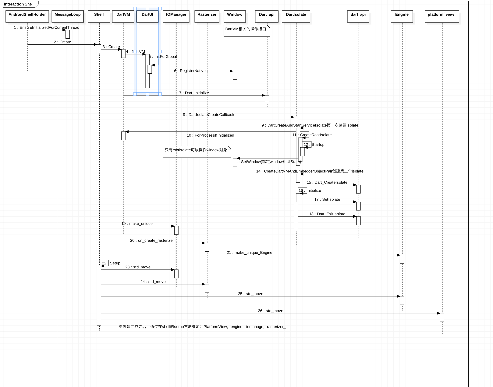
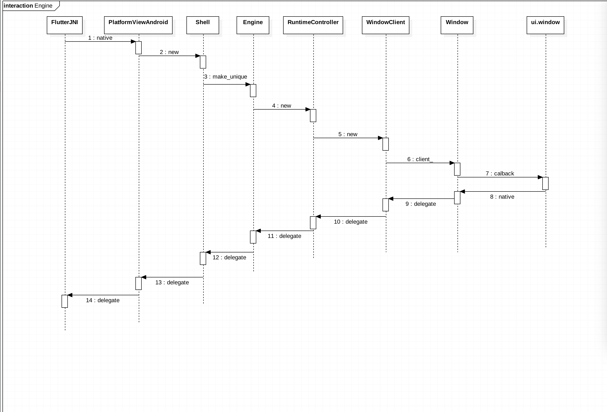

<!doctype html>
<html lang="en" class="no-js">
  <head>
    
      <meta charset="utf-8">
      <meta name="viewport" content="width=device-width,initial-scale=1">
      <meta http-equiv="x-ua-compatible" content="ie=edge">
      
        <meta name="description" content="苍成坤的 blog">
      
      
        <link rel="canonical" href="https://squidfunk.github.io/mkdocs-material/android/flutter/flutterenginedir/">
      
      
        <meta name="author" content="Aige">
      
      
        <meta name="lang:clipboard.copy" content="Copy to clipboard">
      
        <meta name="lang:clipboard.copied" content="Copied to clipboard">
      
        <meta name="lang:search.language" content="jp">
      
        <meta name="lang:search.pipeline.stopwords" content="True">
      
        <meta name="lang:search.pipeline.trimmer" content="True">
      
        <meta name="lang:search.result.none" content="No matching documents">
      
        <meta name="lang:search.result.one" content="1 matching document">
      
        <meta name="lang:search.result.other" content="# matching documents">
      
        <meta name="lang:search.tokenizer" content="[\s\-]+">
      
      <link rel="shortcut icon" href="../../../assets/images/favicon.png">
      <meta name="generator" content="mkdocs-1.0.4, mkdocs-material-4.0.1">
    
    
      
        <title>Flutterenginedir - Aige  Docs</title>
      
    
    
      <link rel="stylesheet" href="../../../assets/stylesheets/application.982221ab.css">
      
        <link rel="stylesheet" href="../../../assets/stylesheets/application-palette.224b79ff.css">
      
      
        
        
        <meta name="theme-color" content="#3f51b5">
      
    
    
      <script src="../../../assets/javascripts/modernizr.1f0bcf2b.js"></script>
    
    
      
        <link href="https://fonts.gstatic.com" rel="preconnect" crossorigin>
        <link rel="stylesheet" href="https://fonts.googleapis.com/css?family=Roboto:300,400,400i,700|Roboto+Mono">
        <style>body,input{font-family:"Roboto","Helvetica Neue",Helvetica,Arial,sans-serif}code,kbd,pre{font-family:"Roboto Mono","Courier New",Courier,monospace}</style>
      
    
    <link rel="stylesheet" href="../../../assets/fonts/material-icons.css">
    
    
    
      
        
<script>
  window.ga = window.ga || function() {
    (ga.q = ga.q || []).push(arguments)
  }
  ga.l = +new Date
  /* Setup integration and send page view */
  ga("create", "None", "auto")
  ga("set", "anonymizeIp", true)
  ga("send", "pageview")
  /* Register handler to log search on blur */
  document.addEventListener("DOMContentLoaded", () => {
    if (document.forms.search) {
      var query = document.forms.search.query
      query.addEventListener("blur", function() {
        if (this.value) {
          var path = document.location.pathname;
          ga("send", "pageview", path + "?q=" + this.value)
        }
      })
    }
  })
</script>
<script async src="https://www.google-analytics.com/analytics.js"></script>
      
    
    
  </head>
  
    
    
    <body dir="ltr" data-md-color-primary="indigo" data-md-color-accent="indigo">
  
    <svg class="md-svg">
      <defs>
        
        
          <svg xmlns="http://www.w3.org/2000/svg" width="416" height="448"
    viewBox="0 0 416 448" id="__github">
  <path fill="currentColor" d="M160 304q0 10-3.125 20.5t-10.75 19-18.125
        8.5-18.125-8.5-10.75-19-3.125-20.5 3.125-20.5 10.75-19 18.125-8.5
        18.125 8.5 10.75 19 3.125 20.5zM320 304q0 10-3.125 20.5t-10.75
        19-18.125 8.5-18.125-8.5-10.75-19-3.125-20.5 3.125-20.5 10.75-19
        18.125-8.5 18.125 8.5 10.75 19 3.125 20.5zM360
        304q0-30-17.25-51t-46.75-21q-10.25 0-48.75 5.25-17.75 2.75-39.25
        2.75t-39.25-2.75q-38-5.25-48.75-5.25-29.5 0-46.75 21t-17.25 51q0 22 8
        38.375t20.25 25.75 30.5 15 35 7.375 37.25 1.75h42q20.5 0
        37.25-1.75t35-7.375 30.5-15 20.25-25.75 8-38.375zM416 260q0 51.75-15.25
        82.75-9.5 19.25-26.375 33.25t-35.25 21.5-42.5 11.875-42.875 5.5-41.75
        1.125q-19.5 0-35.5-0.75t-36.875-3.125-38.125-7.5-34.25-12.875-30.25-20.25-21.5-28.75q-15.5-30.75-15.5-82.75
        0-59.25 34-99-6.75-20.5-6.75-42.5 0-29 12.75-54.5 27 0 47.5 9.875t47.25
        30.875q36.75-8.75 77.25-8.75 37 0 70 8 26.25-20.5
        46.75-30.25t47.25-9.75q12.75 25.5 12.75 54.5 0 21.75-6.75 42 34 40 34
        99.5z" />
</svg>
        
      </defs>
    </svg>
    <input class="md-toggle" data-md-toggle="drawer" type="checkbox" id="__drawer" autocomplete="off">
    <input class="md-toggle" data-md-toggle="search" type="checkbox" id="__search" autocomplete="off">
    <label class="md-overlay" data-md-component="overlay" for="__drawer"></label>
    
      <a href="#flutter" tabindex="1" class="md-skip">
        Skip to content
      </a>
    
    
      <header class="md-header" data-md-component="header">
  <nav class="md-header-nav md-grid">
    <div class="md-flex">
      <div class="md-flex__cell md-flex__cell--shrink">
        <a href="https://squidfunk.github.io/mkdocs-material/" title="Aige  Docs" class="md-header-nav__button md-logo">
          
            <i class="md-icon"></i>
          
        </a>
      </div>
      <div class="md-flex__cell md-flex__cell--shrink">
        <label class="md-icon md-icon--menu md-header-nav__button" for="__drawer"></label>
      </div>
      <div class="md-flex__cell md-flex__cell--stretch">
        <div class="md-flex__ellipsis md-header-nav__title" data-md-component="title">
          
            <span class="md-header-nav__topic">
              Aige  Docs
            </span>
            <span class="md-header-nav__topic">
              Flutterenginedir
            </span>
          
        </div>
      </div>
      <div class="md-flex__cell md-flex__cell--shrink">
        
          <label class="md-icon md-icon--search md-header-nav__button" for="__search"></label>
          
<div class="md-search" data-md-component="search" role="dialog">
  <label class="md-search__overlay" for="__search"></label>
  <div class="md-search__inner" role="search">
    <form class="md-search__form" name="search">
      <input type="text" class="md-search__input" name="query" placeholder="Search" autocapitalize="off" autocorrect="off" autocomplete="off" spellcheck="false" data-md-component="query" data-md-state="active">
      <label class="md-icon md-search__icon" for="__search"></label>
      <button type="reset" class="md-icon md-search__icon" data-md-component="reset" tabindex="-1">
        &#xE5CD;
      </button>
    </form>
    <div class="md-search__output">
      <div class="md-search__scrollwrap" data-md-scrollfix>
        <div class="md-search-result" data-md-component="result">
          <div class="md-search-result__meta">
            Type to start searching
          </div>
          <ol class="md-search-result__list"></ol>
        </div>
      </div>
    </div>
  </div>
</div>
        
      </div>
      
        <div class="md-flex__cell md-flex__cell--shrink">
          <div class="md-header-nav__source">
            


  

<a href="https://github.com/cangchengkun/Docs" title="Go to repository" class="md-source" data-md-source="github">
  
    <div class="md-source__icon">
      <svg viewBox="0 0 24 24" width="24" height="24">
        <use xlink:href="#__github" width="24" height="24"></use>
      </svg>
    </div>
  
  <div class="md-source__repository">
    Aige github
  </div>
</a>
          </div>
        </div>
      
    </div>
  </nav>
</header>
    
    <div class="md-container">
      
        
      
      
        

<nav class="md-tabs" data-md-component="tabs">
  <div class="md-tabs__inner md-grid">
    <ul class="md-tabs__list">
      
        
  <li class="md-tabs__item">
    
      <a href="../../.." title="Home" class="md-tabs__link md-tabs__link--active">
        Home
      </a>
    
  </li>

      
        
      
        
  
  
    
    
  
  
    <li class="md-tabs__item">
      
        <a href="../../flutterdev/isolatedev/" title="Android" class="md-tabs__link">
          Android
        </a>
      
    </li>
  

  

      
        
  
  
    
    
  
  
    <li class="md-tabs__item">
      
        <a href="../../../python/base/pythonlang/" title="Python" class="md-tabs__link">
          Python
        </a>
      
    </li>
  

  

      
        
  
  
    <li class="md-tabs__item">
      
        <a href="../../../iot/Alexa/" title="IoT" class="md-tabs__link">
          IoT
        </a>
      
    </li>
  

      
        
  
  
    <li class="md-tabs__item">
      
        <a href="../../../secret/reousrce/" title="Secret" class="md-tabs__link">
          Secret
        </a>
      
    </li>
  

      
        
  
  
    <li class="md-tabs__item">
      
        <a href="../../../linux/resource/" title="Linux" class="md-tabs__link">
          Linux
        </a>
      
    </li>
  

      
        
  
  
    <li class="md-tabs__item">
      
        <a href="../../../shell/shellresource/" title="Shell" class="md-tabs__link">
          Shell
        </a>
      
    </li>
  

      
        
  
  
    <li class="md-tabs__item">
      
        <a href="../../../extensions/admonition/" title="Tools" class="md-tabs__link">
          Tools
        </a>
      
    </li>
  

      
        
  
  
    <li class="md-tabs__item">
      
        <a href="../../../download/download/" title="Download" class="md-tabs__link">
          Download
        </a>
      
    </li>
  

      
    </ul>
  </div>
</nav>
      
      <main class="md-main">
        <div class="md-main__inner md-grid" data-md-component="container">
          
            
              <div class="md-sidebar md-sidebar--primary" data-md-component="navigation">
                <div class="md-sidebar__scrollwrap">
                  <div class="md-sidebar__inner">
                    <nav class="md-nav md-nav--primary" data-md-level="0">
  <label class="md-nav__title md-nav__title--site" for="__drawer">
    <a href="https://squidfunk.github.io/mkdocs-material/" title="Aige  Docs" class="md-nav__button md-logo">
      
        <i class="md-icon"></i>
      
    </a>
    Aige  Docs
  </label>
  
    <div class="md-nav__source">
      


  

<a href="https://github.com/cangchengkun/Docs" title="Go to repository" class="md-source" data-md-source="github">
  
    <div class="md-source__icon">
      <svg viewBox="0 0 24 24" width="24" height="24">
        <use xlink:href="#__github" width="24" height="24"></use>
      </svg>
    </div>
  
  <div class="md-source__repository">
    Aige github
  </div>
</a>
    </div>
  
  <ul class="md-nav__list" data-md-scrollfix>
    
      
      
      


  <li class="md-nav__item">
    <a href="../../.." title="Home" class="md-nav__link">
      Home
    </a>
  </li>

    
      
      
      


  <li class="md-nav__item">
    <a href="../../../getting-started/" title="Getting started" class="md-nav__link">
      Getting started
    </a>
  </li>

    
      
      
      


  <li class="md-nav__item md-nav__item--nested">
    
      <input class="md-toggle md-nav__toggle" data-md-toggle="nav-3" type="checkbox" id="nav-3">
    
    <label class="md-nav__link" for="nav-3">
      Android
    </label>
    <nav class="md-nav" data-md-component="collapsible" data-md-level="1">
      <label class="md-nav__title" for="nav-3">
        Android
      </label>
      <ul class="md-nav__list" data-md-scrollfix>
        
        
          
          
          


  <li class="md-nav__item md-nav__item--nested">
    
      <input class="md-toggle md-nav__toggle" data-md-toggle="nav-3-1" type="checkbox" id="nav-3-1">
    
    <label class="md-nav__link" for="nav-3-1">
      Flutter
    </label>
    <nav class="md-nav" data-md-component="collapsible" data-md-level="2">
      <label class="md-nav__title" for="nav-3-1">
        Flutter
      </label>
      <ul class="md-nav__list" data-md-scrollfix>
        
        
          
          
          


  <li class="md-nav__item">
    <a href="../../flutterdev/isolatedev/" title="ISOlate使用" class="md-nav__link">
      ISOlate使用
    </a>
  </li>

        
          
          
          


  <li class="md-nav__item">
    <a href="../../flutterdev/fluttersnip/" title="代码片段" class="md-nav__link">
      代码片段
    </a>
  </li>

        
          
          
          


  <li class="md-nav__item">
    <a href="../FlutterKey/" title="FlutterKey" class="md-nav__link">
      FlutterKey
    </a>
  </li>

        
          
          
          


  <li class="md-nav__item">
    <a href="../flutter/" title="Flutter" class="md-nav__link">
      Flutter
    </a>
  </li>

        
          
          
          


  <li class="md-nav__item">
    <a href="../FlutterTools/" title="FlutterSdk" class="md-nav__link">
      FlutterSdk
    </a>
  </li>

        
          
          
          


  <li class="md-nav__item">
    <a href="../ComplieMode/" title="编译模式" class="md-nav__link">
      编译模式
    </a>
  </li>

        
          
          
          


  <li class="md-nav__item">
    <a href="../EngineCompile/" title="FlutterEngine编译" class="md-nav__link">
      FlutterEngine编译
    </a>
  </li>

        
          
          
          


  <li class="md-nav__item">
    <a href="../GNTools/" title="GNTools" class="md-nav__link">
      GNTools
    </a>
  </li>

        
          
          
          


  <li class="md-nav__item">
    <a href="../NinjaSystem/" title="Ninja编译系统" class="md-nav__link">
      Ninja编译系统
    </a>
  </li>

        
          
          
          


  <li class="md-nav__item">
    <a href="../FlutterComplieFile/" title="Flutter编译产物" class="md-nav__link">
      Flutter编译产物
    </a>
  </li>

        
          
          
          


  <li class="md-nav__item">
    <a href="../flutterAndroidInit/" title="Android加载Dart文件" class="md-nav__link">
      Android加载Dart文件
    </a>
  </li>

        
          
          
          


  <li class="md-nav__item">
    <a href="../AndroidViewinit/" title="Android初始化View" class="md-nav__link">
      Android初始化View
    </a>
  </li>

        
          
          
          


  <li class="md-nav__item">
    <a href="../EngineInit/" title="Engine初始化" class="md-nav__link">
      Engine初始化
    </a>
  </li>

        
          
          
          


  <li class="md-nav__item">
    <a href="../EngineView/" title="EngineView初始化" class="md-nav__link">
      EngineView初始化
    </a>
  </li>

        
          
          
          


  <li class="md-nav__item">
    <a href="../SmartPtr/" title="C++智能指针" class="md-nav__link">
      C++智能指针
    </a>
  </li>

        
          
          
          


  <li class="md-nav__item">
    <a href="../NativeExtensions/" title="NativeExtensions" class="md-nav__link">
      NativeExtensions
    </a>
  </li>

        
          
          
          


  <li class="md-nav__item">
    <a href="../MessageLoop/" title="MessageLoop" class="md-nav__link">
      MessageLoop
    </a>
  </li>

        
          
          
          


  <li class="md-nav__item">
    <a href="../DartVM/" title="初始化DartVM" class="md-nav__link">
      初始化DartVM
    </a>
  </li>

        
          
          
          


  <li class="md-nav__item">
    <a href="../platformplugin/" title="PlatformChannel" class="md-nav__link">
      PlatformChannel
    </a>
  </li>

        
          
          
          


  <li class="md-nav__item">
    <a href="../flutterexample/" title="example" class="md-nav__link">
      example
    </a>
  </li>

        
          
          
          


  <li class="md-nav__item">
    <a href="../runApp/" title="runApp" class="md-nav__link">
      runApp
    </a>
  </li>

        
          
          
          


  <li class="md-nav__item">
    <a href="../DartVMServiceProtocol/" title="DartVMServiceProtocol" class="md-nav__link">
      DartVMServiceProtocol
    </a>
  </li>

        
          
          
          


  <li class="md-nav__item">
    <a href="../FlutterSupportView/" title="FlutterSupportView" class="md-nav__link">
      FlutterSupportView
    </a>
  </li>

        
          
          
          


  <li class="md-nav__item">
    <a href="../profile/" title="性能优化" class="md-nav__link">
      性能优化
    </a>
  </li>

        
          
          
          


  <li class="md-nav__item">
    <a href="../Architecture/" title="Architecture" class="md-nav__link">
      Architecture
    </a>
  </li>

        
          
          
          


  <li class="md-nav__item">
    <a href="../reviewCode/" title="reviewCode" class="md-nav__link">
      reviewCode
    </a>
  </li>

        
          
          
          


  <li class="md-nav__item">
    <a href="../DevResource/" title="资料" class="md-nav__link">
      资料
    </a>
  </li>

        
      </ul>
    </nav>
  </li>

        
          
          
          


  <li class="md-nav__item md-nav__item--nested">
    
      <input class="md-toggle md-nav__toggle" data-md-toggle="nav-3-2" type="checkbox" id="nav-3-2">
    
    <label class="md-nav__link" for="nav-3-2">
      ReactNative
    </label>
    <nav class="md-nav" data-md-component="collapsible" data-md-level="2">
      <label class="md-nav__title" for="nav-3-2">
        ReactNative
      </label>
      <ul class="md-nav__list" data-md-scrollfix>
        
        
          
          
          


  <li class="md-nav__item">
    <a href="../../rn/react_native/" title="ReactNative" class="md-nav__link">
      ReactNative
    </a>
  </li>

        
      </ul>
    </nav>
  </li>

        
          
          
          


  <li class="md-nav__item md-nav__item--nested">
    
      <input class="md-toggle md-nav__toggle" data-md-toggle="nav-3-3" type="checkbox" id="nav-3-3">
    
    <label class="md-nav__link" for="nav-3-3">
      Awsamplify
    </label>
    <nav class="md-nav" data-md-component="collapsible" data-md-level="2">
      <label class="md-nav__title" for="nav-3-3">
        Awsamplify
      </label>
      <ul class="md-nav__list" data-md-scrollfix>
        
        
          
          
          


  <li class="md-nav__item">
    <a href="../../aws-android/awsamplify/" title="Awsamplify" class="md-nav__link">
      Awsamplify
    </a>
  </li>

        
      </ul>
    </nav>
  </li>

        
          
          
          


  <li class="md-nav__item">
    <a href="../../androidTools/" title="AndroidTools" class="md-nav__link">
      AndroidTools
    </a>
  </li>

        
          
          
          


  <li class="md-nav__item">
    <a href="../../issue/Androidissue/" title="Issue常见问题" class="md-nav__link">
      Issue常见问题
    </a>
  </li>

        
      </ul>
    </nav>
  </li>

    
      
      
      


  <li class="md-nav__item md-nav__item--nested">
    
      <input class="md-toggle md-nav__toggle" data-md-toggle="nav-4" type="checkbox" id="nav-4">
    
    <label class="md-nav__link" for="nav-4">
      Python
    </label>
    <nav class="md-nav" data-md-component="collapsible" data-md-level="1">
      <label class="md-nav__title" for="nav-4">
        Python
      </label>
      <ul class="md-nav__list" data-md-scrollfix>
        
        
          
          
          


  <li class="md-nav__item md-nav__item--nested">
    
      <input class="md-toggle md-nav__toggle" data-md-toggle="nav-4-1" type="checkbox" id="nav-4-1">
    
    <label class="md-nav__link" for="nav-4-1">
      基础
    </label>
    <nav class="md-nav" data-md-component="collapsible" data-md-level="2">
      <label class="md-nav__title" for="nav-4-1">
        基础
      </label>
      <ul class="md-nav__list" data-md-scrollfix>
        
        
          
          
          


  <li class="md-nav__item">
    <a href="../../../python/base/pythonlang/" title="语言基础" class="md-nav__link">
      语言基础
    </a>
  </li>

        
          
          
          


  <li class="md-nav__item">
    <a href="../../../python/base/advancesPython/" title="高级开发" class="md-nav__link">
      高级开发
    </a>
  </li>

        
          
          
          


  <li class="md-nav__item">
    <a href="../../../python/base/pythoninspect/" title="Python反射" class="md-nav__link">
      Python反射
    </a>
  </li>

        
          
          
          


  <li class="md-nav__item md-nav__item--nested">
    
      <input class="md-toggle md-nav__toggle" data-md-toggle="nav-4-1-4" type="checkbox" id="nav-4-1-4">
    
    <label class="md-nav__link" for="nav-4-1-4">
      开发环境
    </label>
    <nav class="md-nav" data-md-component="collapsible" data-md-level="3">
      <label class="md-nav__title" for="nav-4-1-4">
        开发环境
      </label>
      <ul class="md-nav__list" data-md-scrollfix>
        
        
          
          
          


  <li class="md-nav__item">
    <a href="../../../python/base/pythonEnv/" title="环境" class="md-nav__link">
      环境
    </a>
  </li>

        
      </ul>
    </nav>
  </li>

        
      </ul>
    </nav>
  </li>

        
          
          
          


  <li class="md-nav__item md-nav__item--nested">
    
      <input class="md-toggle md-nav__toggle" data-md-toggle="nav-4-2" type="checkbox" id="nav-4-2">
    
    <label class="md-nav__link" for="nav-4-2">
      爬虫
    </label>
    <nav class="md-nav" data-md-component="collapsible" data-md-level="2">
      <label class="md-nav__title" for="nav-4-2">
        爬虫
      </label>
      <ul class="md-nav__list" data-md-scrollfix>
        
        
          
          
          


  <li class="md-nav__item">
    <a href="../../../python/scrapy/scrapyBase/" title="爬虫基础" class="md-nav__link">
      爬虫基础
    </a>
  </li>

        
          
          
          


  <li class="md-nav__item">
    <a href="../../../python/scrapy/scrapylib/" title="爬虫库" class="md-nav__link">
      爬虫库
    </a>
  </li>

        
          
          
          


  <li class="md-nav__item">
    <a href="../../../python/scrapy/spiderdemo/" title="爬虫实战" class="md-nav__link">
      爬虫实战
    </a>
  </li>

        
      </ul>
    </nav>
  </li>

        
          
          
          


  <li class="md-nav__item md-nav__item--nested">
    
      <input class="md-toggle md-nav__toggle" data-md-toggle="nav-4-3" type="checkbox" id="nav-4-3">
    
    <label class="md-nav__link" for="nav-4-3">
      服务器开发
    </label>
    <nav class="md-nav" data-md-component="collapsible" data-md-level="2">
      <label class="md-nav__title" for="nav-4-3">
        服务器开发
      </label>
      <ul class="md-nav__list" data-md-scrollfix>
        
        
          
          
          


  <li class="md-nav__item md-nav__item--nested">
    
      <input class="md-toggle md-nav__toggle" data-md-toggle="nav-4-3-1" type="checkbox" id="nav-4-3-1">
    
    <label class="md-nav__link" for="nav-4-3-1">
      WEB
    </label>
    <nav class="md-nav" data-md-component="collapsible" data-md-level="3">
      <label class="md-nav__title" for="nav-4-3-1">
        WEB
      </label>
      <ul class="md-nav__list" data-md-scrollfix>
        
        
          
          
          


  <li class="md-nav__item">
    <a href="../../../python/server/pythonweb/" title="主流服务器介绍" class="md-nav__link">
      主流服务器介绍
    </a>
  </li>

        
          
          
          


  <li class="md-nav__item">
    <a href="../../../python/server/serverbase/" title="服务器常用软件" class="md-nav__link">
      服务器常用软件
    </a>
  </li>

        
          
          
          


  <li class="md-nav__item">
    <a href="../../../python/server/pythonOauth/" title="Oauth2服务器搭建" class="md-nav__link">
      Oauth2服务器搭建
    </a>
  </li>

        
      </ul>
    </nav>
  </li>

        
          
          
          


  <li class="md-nav__item md-nav__item--nested">
    
      <input class="md-toggle md-nav__toggle" data-md-toggle="nav-4-3-2" type="checkbox" id="nav-4-3-2">
    
    <label class="md-nav__link" for="nav-4-3-2">
      aws
    </label>
    <nav class="md-nav" data-md-component="collapsible" data-md-level="3">
      <label class="md-nav__title" for="nav-4-3-2">
        aws
      </label>
      <ul class="md-nav__list" data-md-scrollfix>
        
        
          
          
          


  <li class="md-nav__item">
    <a href="../../../python/server/aws/pyaws/" title="AWSpython使用" class="md-nav__link">
      AWSpython使用
    </a>
  </li>

        
          
          
          


  <li class="md-nav__item">
    <a href="../../../python/server/aws/serverless/" title="无服务" class="md-nav__link">
      无服务
    </a>
  </li>

        
      </ul>
    </nav>
  </li>

        
          
          
          


  <li class="md-nav__item md-nav__item--nested">
    
      <input class="md-toggle md-nav__toggle" data-md-toggle="nav-4-3-3" type="checkbox" id="nav-4-3-3">
    
    <label class="md-nav__link" for="nav-4-3-3">
      Django开发
    </label>
    <nav class="md-nav" data-md-component="collapsible" data-md-level="3">
      <label class="md-nav__title" for="nav-4-3-3">
        Django开发
      </label>
      <ul class="md-nav__list" data-md-scrollfix>
        
        
          
          
          


  <li class="md-nav__item">
    <a href="../../../python/server/django/djangosignals/" title="Dajngo信号机制" class="md-nav__link">
      Dajngo信号机制
    </a>
  </li>

        
          
          
          


  <li class="md-nav__item">
    <a href="../../../python/server/django/djangoLogger/" title="日志配置" class="md-nav__link">
      日志配置
    </a>
  </li>

        
          
          
          


  <li class="md-nav__item">
    <a href="../../../python/server/django/djangosignals/" title="Djangomessage" class="md-nav__link">
      Djangomessage
    </a>
  </li>

        
          
          
          


  <li class="md-nav__item">
    <a href="../../../python/server/django/JSONEncoder/" title="JsonEncoder" class="md-nav__link">
      JsonEncoder
    </a>
  </li>

        
          
          
          


  <li class="md-nav__item">
    <a href="../../../python/server/django/middleware/" title="中间件" class="md-nav__link">
      中间件
    </a>
  </li>

        
          
          
          


  <li class="md-nav__item">
    <a href="../../../python/server/django/question/" title="常见问题" class="md-nav__link">
      常见问题
    </a>
  </li>

        
      </ul>
    </nav>
  </li>

        
      </ul>
    </nav>
  </li>

        
          
          
          


  <li class="md-nav__item">
    <a href="../../../python/pythonTools/" title="开发工具" class="md-nav__link">
      开发工具
    </a>
  </li>

        
      </ul>
    </nav>
  </li>

    
      
      
      


  <li class="md-nav__item md-nav__item--nested">
    
      <input class="md-toggle md-nav__toggle" data-md-toggle="nav-5" type="checkbox" id="nav-5">
    
    <label class="md-nav__link" for="nav-5">
      IoT
    </label>
    <nav class="md-nav" data-md-component="collapsible" data-md-level="1">
      <label class="md-nav__title" for="nav-5">
        IoT
      </label>
      <ul class="md-nav__list" data-md-scrollfix>
        
        
          
          
          


  <li class="md-nav__item">
    <a href="../../../iot/Alexa/" title="Alexa" class="md-nav__link">
      Alexa
    </a>
  </li>

        
          
          
          


  <li class="md-nav__item">
    <a href="../../../iot/awsiot/" title="AWSIOT" class="md-nav__link">
      AWSIOT
    </a>
  </li>

        
          
          
          


  <li class="md-nav__item">
    <a href="../../../iot/iotCore/" title="IotCore" class="md-nav__link">
      IotCore
    </a>
  </li>

        
          
          
          


  <li class="md-nav__item">
    <a href="../../../iot/program/" title="program" class="md-nav__link">
      program
    </a>
  </li>

        
          
          
          


  <li class="md-nav__item">
    <a href="../../../iot/protocol/" title="protocol" class="md-nav__link">
      protocol
    </a>
  </li>

        
          
          
          


  <li class="md-nav__item">
    <a href="../../../iot/usermanager/" title="UserManager" class="md-nav__link">
      UserManager
    </a>
  </li>

        
          
          
          


  <li class="md-nav__item">
    <a href="../../../iot/developerTools/" title="aws开发工具" class="md-nav__link">
      aws开发工具
    </a>
  </li>

        
      </ul>
    </nav>
  </li>

    
      
      
      


  <li class="md-nav__item md-nav__item--nested">
    
      <input class="md-toggle md-nav__toggle" data-md-toggle="nav-6" type="checkbox" id="nav-6">
    
    <label class="md-nav__link" for="nav-6">
      Secret
    </label>
    <nav class="md-nav" data-md-component="collapsible" data-md-level="1">
      <label class="md-nav__title" for="nav-6">
        Secret
      </label>
      <ul class="md-nav__list" data-md-scrollfix>
        
        
          
          
          


  <li class="md-nav__item">
    <a href="../../../secret/reousrce/" title="安全" class="md-nav__link">
      安全
    </a>
  </li>

        
          
          
          


  <li class="md-nav__item">
    <a href="../../../tools/networktools/" title="端口扫描工具" class="md-nav__link">
      端口扫描工具
    </a>
  </li>

        
      </ul>
    </nav>
  </li>

    
      
      
      


  <li class="md-nav__item md-nav__item--nested">
    
      <input class="md-toggle md-nav__toggle" data-md-toggle="nav-7" type="checkbox" id="nav-7">
    
    <label class="md-nav__link" for="nav-7">
      Linux
    </label>
    <nav class="md-nav" data-md-component="collapsible" data-md-level="1">
      <label class="md-nav__title" for="nav-7">
        Linux
      </label>
      <ul class="md-nav__list" data-md-scrollfix>
        
        
          
          
          


  <li class="md-nav__item">
    <a href="../../../linux/resource/" title="资料" class="md-nav__link">
      资料
    </a>
  </li>

        
      </ul>
    </nav>
  </li>

    
      
      
      


  <li class="md-nav__item md-nav__item--nested">
    
      <input class="md-toggle md-nav__toggle" data-md-toggle="nav-8" type="checkbox" id="nav-8">
    
    <label class="md-nav__link" for="nav-8">
      Shell
    </label>
    <nav class="md-nav" data-md-component="collapsible" data-md-level="1">
      <label class="md-nav__title" for="nav-8">
        Shell
      </label>
      <ul class="md-nav__list" data-md-scrollfix>
        
        
          
          
          


  <li class="md-nav__item">
    <a href="../../../shell/shellresource/" title="Shell" class="md-nav__link">
      Shell
    </a>
  </li>

        
      </ul>
    </nav>
  </li>

    
      
      
      


  <li class="md-nav__item md-nav__item--nested">
    
      <input class="md-toggle md-nav__toggle" data-md-toggle="nav-9" type="checkbox" id="nav-9">
    
    <label class="md-nav__link" for="nav-9">
      Tools
    </label>
    <nav class="md-nav" data-md-component="collapsible" data-md-level="1">
      <label class="md-nav__title" for="nav-9">
        Tools
      </label>
      <ul class="md-nav__list" data-md-scrollfix>
        
        
          
          
          


  <li class="md-nav__item">
    <a href="../../../extensions/admonition/" title="AndroidStudio" class="md-nav__link">
      AndroidStudio
    </a>
  </li>

        
          
          
          


  <li class="md-nav__item">
    <a href="../../../tools/atom/" title="Atom" class="md-nav__link">
      Atom
    </a>
  </li>

        
          
          
          


  <li class="md-nav__item">
    <a href="../../../tools/vim/" title="Vim" class="md-nav__link">
      Vim
    </a>
  </li>

        
          
          
          


  <li class="md-nav__item">
    <a href="../../../extensions/metadata/" title="Chrome" class="md-nav__link">
      Chrome
    </a>
  </li>

        
          
          
          


  <li class="md-nav__item">
    <a href="../../../tools/markdown/" title="Markdown" class="md-nav__link">
      Markdown
    </a>
  </li>

        
          
          
          


  <li class="md-nav__item">
    <a href="../../../tools/material/" title="Material for MkDocs" class="md-nav__link">
      Material for MkDocs
    </a>
  </li>

        
          
          
          


  <li class="md-nav__item">
    <a href="../../../tools/git/" title="Git" class="md-nav__link">
      Git
    </a>
  </li>

        
          
          
          


  <li class="md-nav__item">
    <a href="../../../tools/VSCode/" title="VSCode" class="md-nav__link">
      VSCode
    </a>
  </li>

        
          
          
          


  <li class="md-nav__item">
    <a href="../../../tools/datareporting/" title="数据分析" class="md-nav__link">
      数据分析
    </a>
  </li>

        
      </ul>
    </nav>
  </li>

    
      
      
      


  <li class="md-nav__item md-nav__item--nested">
    
      <input class="md-toggle md-nav__toggle" data-md-toggle="nav-10" type="checkbox" id="nav-10">
    
    <label class="md-nav__link" for="nav-10">
      Download
    </label>
    <nav class="md-nav" data-md-component="collapsible" data-md-level="1">
      <label class="md-nav__title" for="nav-10">
        Download
      </label>
      <ul class="md-nav__list" data-md-scrollfix>
        
        
          
          
          


  <li class="md-nav__item">
    <a href="../../../download/download/" title="download" class="md-nav__link">
      download
    </a>
  </li>

        
      </ul>
    </nav>
  </li>

    
  </ul>
</nav>
                  </div>
                </div>
              </div>
            
            
              <div class="md-sidebar md-sidebar--secondary" data-md-component="toc">
                <div class="md-sidebar__scrollwrap">
                  <div class="md-sidebar__inner">
                    
<nav class="md-nav md-nav--secondary">
  
  
    
  
  
</nav>
                  </div>
                </div>
              </div>
            
          
          <div class="md-content">
            <article class="md-content__inner md-typeset">
              
                
                
                <h1 id="flutter">Flutter引擎目录<a class="headerlink" href="#flutter" title="Permanent link">&para;</a></h1>
<p>AUTHORS
BUILD.gn
LICENSE
README.md
build
buildtools
flutter
ios_tools
out
third_party
tools</p>
<p>Flutter 目录二级目录:
total 96
-rw-r--../../   1 cuco  staff   525B Feb 28 11:00 AUTHORS
-rw-r--r--   1 cuco  staff   3.8K Feb 28 11:00 BUILD.gn
-rw-r--r--   1 cuco  staff   756B Feb 28 11:00 CONTRIBUTING.md
-rw-r--r--   1 cuco  staff    20K Feb 28 13:17 DEPS
-rw-r--r--   1 cuco  staff   1.5K Feb 28 11:00 LICENSE
-rw-r--r--   1 cuco  staff   1.4K Feb 28 11:00 README.md
-rw-r--r--   1 cuco  staff   6.4K Feb 28 11:00 analysis_options.yaml
drwxr-xr-x  10 cuco  staff   320B Feb 28 11:00 assets
drwxr-xr-x   5 cuco  staff   160B Feb 28 11:00 benchmarking
drwxr-xr-x   5 cuco  staff   160B Feb 28 11:00 build
drwxr-xr-x  11 cuco  staff   352B Feb 28 11:00 ci
drwxr-xr-x  10 cuco  staff   320B Feb 28 11:00 common
drwxr-xr-x   3 cuco  staff    96B Feb 28 11:00 docs
drwxr-xr-x  31 cuco  staff   992B Feb 28 11:00 flow
drwxr-xr-x   6 cuco  staff   192B Feb 28 11:45 flutter_kernel_transformers
drwxr-xr-x  61 cuco  staff   1.9K Feb 28 11:00 fml
drwxr-xr-x  10 cuco  staff   320B Feb 28 11:45 frontend_server
drwxr-xr-x   6 cuco  staff   192B Feb 28 11:00 lib
drwxr-xr-x  29 cuco  staff   928B Feb 28 11:00 runtime
drwxr-xr-x   8 cuco  staff   256B Feb 28 11:00 shell：客户端调用Flutter的文件目录，支持Android，Mac，IOS，嵌入式系统，在客户端开始会导入该目录下的包，在AndroidStudio中显示为FlutterForAndroid
drwxr-xr-x   6 cuco  staff   192B Feb 28 11:00 sky
drwxr-xr-x   8 cuco  staff   256B Feb 28 13:17 synchronization
drwxr-xr-x  15 cuco  staff   480B Feb 28 11:00 testing
drwxr-xr-x   4 cuco  staff   128B Feb 28 11:00 third_party
drwxr-xr-x  11 cuco  staff   352B Mar  4 19:32 tools
drwxr-xr-x  37 cuco  staff   1.2K Feb 28 11:00 vulkan</p>
<p>FlutterNativeView平台通道数据传输需要进一步分析</p>
<p>make_unique  函数：/Users/cuco/engine/src/flutter/shell/platform/android/android_shell_holder.cc</p>
<p>RefPtr<fml::TaskRunner>：/Users/cuco/engine/src/flutter/common/task_runners.cc</p>
<p>MessageLoop:engine/src/flutter/shell/platform/android/android_shell_holder.cc
MakeRefCounted:/Users/cuco/engine/src/flutter/shell/platform/android/platform_view_android_jni.cc</p>
<h1 id="flutter-jni">Flutter 初始化调用JNI方法完成初始化<a class="headerlink" href="#flutter-jni" title="Permanent link">&para;</a></h1>
<h1 id="androidflutter">Android初始化默认编译好的Flutter代码的文件<a class="headerlink" href="#androidflutter" title="Permanent link">&para;</a></h1>
<p>Android代码在初始化完成flutter的文件之后，提供SurfaceView到底层进行Flutter engine 中的Skia 2d图像
同为跨平台技术，Flutter有何优势呢？</p>
<p>Flutter在Rlease模式下直接将Dart编译成本地机器码，避免了代码解释运行的性能消耗。
Dart本身针对高频率循环刷新（如屏幕每秒60帧）在内存层面进行了优化，使得Dart运行时在屏幕绘制实现如鱼得水。
Flutter实现了自己的图形绘制避免了Native桥接。
Flutter在应用层使用Dart进行开发，而支撑它的是用C++开发的引擎。</p>
<p></p>
<h1 id="androidflutter_1">在Android端初始化Flutter 相关的环境通过两个步骤来完成：<a class="headerlink" href="#androidflutter_1" title="Permanent link">&para;</a></h1>
<p>在下图中:
  * 1.初始化Flutter Engine 运行FlutterUI库的环境，初始化AndroidShellHolder：来管理Flutter相关的引环境
  * 2.注册SurfaceView给Flutter Eingine，提供给引擎进行绘制的画布，调用ANative_window类来连接FlutterUI和AndroidUI的桥梁</p>
<p>

接下来进行分析在JNI层的调用过程:AttachJNI中调用<code>std::make_unique&lt;AndroidShellHolder&gt;</code>方法创建<code>AndroidShellHolder</code>实例<code>engine/src/flutter/shell/platform/android/platform_view_android_jni.cc</code>
<div class="codehilite"><pre><span></span>    <span class="c1">// Called By Java</span>
    <span class="c1">// 方法注册进入JNI</span>
    <span class="k">static</span> <span class="n">jlong</span> <span class="nf">AttachJNI</span><span class="p">(</span><span class="n">JNIEnv</span><span class="o">*</span> <span class="n">env</span><span class="p">,</span>
                           <span class="n">jclass</span> <span class="n">clazz</span><span class="p">,</span>
                           <span class="n">jobject</span> <span class="n">flutterJNI</span><span class="p">,</span>
                           <span class="n">jboolean</span> <span class="n">is_background_view</span><span class="p">)</span> <span class="p">{</span>
      <span class="n">fml</span><span class="o">::</span><span class="n">jni</span><span class="o">::</span><span class="n">JavaObjectWeakGlobalRef</span> <span class="n">java_object</span><span class="p">(</span><span class="n">env</span><span class="p">,</span> <span class="n">flutterJNI</span><span class="p">);</span>
      <span class="k">auto</span> <span class="n">shell_holder</span> <span class="o">=</span> <span class="n">std</span><span class="o">::</span><span class="n">make_unique</span><span class="o">&lt;</span><span class="n">AndroidShellHolder</span><span class="o">&gt;</span><span class="p">(</span>
          <span class="n">FlutterMain</span><span class="o">::</span><span class="n">Get</span><span class="p">().</span><span class="n">GetSettings</span><span class="p">(),</span> <span class="n">java_object</span><span class="p">,</span> <span class="n">is_background_view</span><span class="p">);</span>
      <span class="k">if</span> <span class="p">(</span><span class="n">shell_holder</span><span class="o">-&gt;</span><span class="n">IsValid</span><span class="p">())</span> <span class="p">{</span>
        <span class="k">return</span> <span class="k">reinterpret_cast</span><span class="o">&lt;</span><span class="n">jlong</span><span class="o">&gt;</span><span class="p">(</span><span class="n">shell_holder</span><span class="p">.</span><span class="n">release</span><span class="p">());</span>
      <span class="p">}</span> <span class="k">else</span> <span class="p">{</span>
        <span class="k">return</span> <span class="mi">0</span><span class="p">;</span>
      <span class="p">}</span>
    <span class="p">}</span>
</pre></div></p>
<p><code>AndroidShellHolder</code>类是对Platfrom层调用JNI的接口作为一个代理对象来进行统一的代理入口，使用C++11的智能指针对象来统一管理一个对象</p>
<p><a href="https://www.cnblogs.com/TenosDoIt/p/3456704.html">C++智能指针</a></p>
<p>介绍c++里面的四个智能指针: auto_ptr, shared_ptr, weak_ptr, unique_ptr 其中后三个是c++11支持，并且第一个已经被c++11弃用。</p>
<p>为什么要使用智能指针：我们知道c++的内存管理是让很多人头疼的事，当我们写一个new语句时，一般就会立即把delete语句直接也写了，但是我们不能避免程序还未执行到delete时就跳转了或者在函数中没有执行到最后的delete语句就返回了，如果我们不在每一个可能跳转或者返回的语句前释放资源，就会造成内存泄露。使用智能指针可以很大程度上的避免这个问题，因为智能指针就是一个类，当超出了类的作用域是，类会自动调用析构函数，析构函数会自动释放资源。下面我们逐个介绍。</p>
<p><a href="https://www.cnblogs.com/DswCnblog/p/5628195.html">unique_ptr</a>,是用于取代c++98的auto_ptr的产物,在c++98的时候还没有移动语义(move semantics)的支持,因此对于auto_ptr的控制权转移的实现没有核心元素的支持,但是还是实现了auto_ptr的移动语义,这样带来的一些问题是拷贝构造函数和复制操作重载函数不够完美,具体体现就是把auto_ptr作为函数参数,传进去的时候控制权转移,转移到函数参数,当函数返回的时候并没有一个控制权移交的过程,所以过了函数调用则原先的auto_ptr已经失效了.在c++11当中有了移动语义,使用move()把unique_ptr传入函数,这样你就知道原先的unique_ptr已经失效了.移动语义本身就说明了这样的问题,比较坑爹的是标准描述是说对于move之后使用原来的内容是未定义行为,并非抛出异常,所以还是要靠人肉遵守游戏规则.再一个,auto_ptr不支持传入deleter,所以只能支持单对象(delete object),而unique_ptr对数组类型有偏特化重载,并且还做了相应的优化,比如用[]访问相应元素等.</p>
<p>unique_ptr 是一个独享所有权的智能指针，它提供了严格意义上的所有权，包括：</p>
<p>1、拥有它指向的对象</p>
<p>2、无法进行复制构造，无法进行复制赋值操作。即无法使两个unique_ptr指向同一个对象。但是可以进行移动构造和移动赋值操作</p>
<p>3、保存指向某个对象的指针，当它本身被删除释放的时候，会使用给定的删除器释放它指向的对象</p>
<p>unique_ptr 可以实现如下功能：</p>
<p>1、为动态申请的内存提供异常安全</p>
<p>2、讲动态申请的内存所有权传递给某函数</p>
<p>3、从某个函数返回动态申请内存的所有权</p>
<p>4、在容器中保存指针</p>
<p>5、auto_ptr 应该具有的功能</p>
<p><a href="https://www.cnblogs.com/DswCnblog/p/5628087.html">share_ptr</a></p>
<p>从名字share就可以看出了资源可以被多个指针共享，它使用计数机制来表明资源被几个指针共享。可以通过成员函数use_count()来查看资源的所有者个数。出了可以通过new来构造，还可以通过传入auto_ptr, unique_ptr,weak_ptr来构造。当我们调用release()时，当前指针会释放资源所有权，计数减一。当计数等于0时，资源会被释放.</p>
<p><a href="https://www.cnblogs.com/DswCnblog/p/5628314.html">weak_ptr</a></p>
<p>weak_ptr是用来解决shared_ptr相互引用时的死锁问题,如果说两个shared_ptr相互引用,那么这两个指针的引用计数永远不可能下降为0,资源永远不会释放。它是对对象的一种弱引用，不会增加对象的引用计数，和shared_ptr之间可以相互转化，shared_ptr可以直接赋值给它，它可以通过调用lock函数来获得shared_ptr。</p>
<p><code>usr/include/c++/v1/memory</code></p>
<div class="codehilite"><pre><span></span><span class="k">auto</span> <span class="n">shell_holder</span> <span class="o">=</span> <span class="n">std</span><span class="o">::</span><span class="n">make_unique</span><span class="o">&lt;</span><span class="n">AndroidShellHolder</span><span class="o">&gt;</span><span class="p">(</span>
    <span class="n">FlutterMain</span><span class="o">::</span><span class="n">Get</span><span class="p">().</span><span class="n">GetSettings</span><span class="p">(),</span> <span class="n">java_object</span><span class="p">,</span> <span class="n">is_background_view</span><span class="p">);</span>
</pre></div>

<p>使用模板方法来创建一个unique_ptr
<div class="codehilite"><pre><span></span><span class="k">template</span><span class="o">&lt;</span><span class="k">class</span> <span class="nc">_Tp</span><span class="o">&gt;</span>
<span class="kr">inline</span> <span class="n">_LIBCPP_INLINE_VISIBILITY</span>
<span class="k">typename</span> <span class="n">__unique_if</span><span class="o">&lt;</span><span class="n">_Tp</span><span class="o">&gt;::</span><span class="n">__unique_array_unknown_bound</span>
<span class="n">make_unique</span><span class="p">(</span><span class="kt">size_t</span> <span class="n">__n</span><span class="p">)</span>
<span class="p">{</span>
    <span class="k">typedef</span> <span class="k">typename</span> <span class="n">remove_extent</span><span class="o">&lt;</span><span class="n">_Tp</span><span class="o">&gt;::</span><span class="n">type</span> <span class="n">_Up</span><span class="p">;</span>
    <span class="k">return</span> <span class="n">unique_ptr</span><span class="o">&lt;</span><span class="n">_Tp</span><span class="o">&gt;</span><span class="p">(</span><span class="k">new</span> <span class="n">_Up</span><span class="p">[</span><span class="n">__n</span><span class="p">]());</span>
<span class="p">}</span>
</pre></div></p>
<h1 id="flutter-android">在Flutter Android侧初始化时调用<a class="headerlink" href="#flutter-android" title="Permanent link">&para;</a></h1>
<p>AndroidShellHolder：主要是管理flutter engine 在Platform端的入口:</p>
<ul>
<li>1.Platfrom,UI,IO,GUP线程的管理，配置参数的的加载</li>
<li>2.创建一个线程清理虚拟机退出的清理工作</li>
<li>3.thread_host_负责管理相关的线程,托管四个相处</li>
<li>4.PlatformViewAndroid的创建，负责管理平台侧是事件处理在UI线程执行</li>
<li>5.Rasterizer的初始化栅格化在GPU线程执行</li>
<li>6.MessageLoop的创建，在platfrom中运行</li>
<li>7.TaskRunners管理添加到不同平台中的线程执行，负责管理四个任务运行器</li>
<li>8.Shell加载第三方库，Java虚拟机的创建</li>
</ul>
<p></p>
<div class="codehilite"><pre><span></span><span class="c1">//  参数说明:</span>
<span class="c1">//</span>
<span class="c1">//   blink::Settings settings,//配置数据</span>
<span class="c1">//   fml::jni::JavaObjectWeakGlobalRef java_object,//FlutterJNI 对象</span>
<span class="c1">//   bool is_background_view</span>
<span class="c1">//   static size_t shell_count = 1;  Shell:对象的个数为一个</span>
<span class="c1">//   完成：</span>
<span class="c1">//     1.加载Settings配置文件，绑定全局对象java_object</span>
<span class="c1">//     2.创建一个线程清理虚拟机退出的清理工作</span>
<span class="c1">//     3.ThreadHost类来管理Flutter engine的Platform，io，GPU，UI线程</span>
<span class="c1">//     4.初始化消息队列：fml::MessageLoop::EnsureInitializedForCurrentThread();</span>
    <span class="c1">//FlutterEngine的初始化入口</span>
    <span class="n">AndroidShellHolder</span><span class="o">::</span><span class="n">AndroidShellHolder</span><span class="p">(</span>
        <span class="n">blink</span><span class="o">::</span><span class="n">Settings</span> <span class="n">settings</span><span class="p">,</span>
        <span class="n">fml</span><span class="o">::</span><span class="n">jni</span><span class="o">::</span><span class="n">JavaObjectWeakGlobalRef</span> <span class="n">java_object</span><span class="p">,</span>
        <span class="kt">bool</span> <span class="n">is_background_view</span><span class="p">)</span>
        <span class="o">:</span> <span class="n">settings_</span><span class="p">(</span><span class="n">std</span><span class="o">::</span><span class="n">move</span><span class="p">(</span><span class="n">settings</span><span class="p">)),</span> <span class="n">java_object_</span><span class="p">(</span><span class="n">java_object</span><span class="p">)</span> <span class="p">{</span>
      <span class="k">static</span> <span class="kt">size_t</span> <span class="n">shell_count</span> <span class="o">=</span> <span class="mi">1</span><span class="p">;</span>
      <span class="k">auto</span> <span class="n">thread_label</span> <span class="o">=</span> <span class="n">std</span><span class="o">::</span><span class="n">to_string</span><span class="p">(</span><span class="n">shell_count</span><span class="o">++</span><span class="p">);</span>
      <span class="c1">// 创建一个线程清理虚拟机退出的清理工作</span>
      <span class="n">FML_CHECK</span><span class="p">(</span><span class="n">pthread_key_create</span><span class="p">(</span><span class="o">&amp;</span><span class="n">thread_destruct_key_</span><span class="p">,</span> <span class="n">ThreadDestructCallback</span><span class="p">)</span> <span class="o">==</span>
                <span class="mi">0</span><span class="p">);</span>

      <span class="k">if</span> <span class="p">(</span><span class="n">is_background_view</span><span class="p">)</span> <span class="p">{</span>
        <span class="n">thread_host_</span> <span class="o">=</span> <span class="p">{</span><span class="n">thread_label</span><span class="p">,</span> <span class="n">ThreadHost</span><span class="o">::</span><span class="n">Type</span><span class="o">::</span><span class="n">UI</span><span class="p">};</span>
      <span class="p">}</span> <span class="k">else</span> <span class="p">{</span>
        <span class="n">thread_host_</span> <span class="o">=</span> <span class="p">{</span><span class="n">thread_label</span><span class="p">,</span> <span class="n">ThreadHost</span><span class="o">::</span><span class="n">Type</span><span class="o">::</span><span class="n">UI</span> <span class="o">|</span> <span class="n">ThreadHost</span><span class="o">::</span><span class="n">Type</span><span class="o">::</span><span class="n">GPU</span> <span class="o">|</span>
                                          <span class="n">ThreadHost</span><span class="o">::</span><span class="n">Type</span><span class="o">::</span><span class="n">IO</span><span class="p">};</span>
      <span class="p">}</span>

      <span class="c1">// Detach from JNI when the UI and GPU threads exit.</span>
      <span class="k">auto</span> <span class="n">jni_exit_task</span><span class="p">([</span><span class="n">key</span> <span class="o">=</span> <span class="n">thread_destruct_key_</span><span class="p">]()</span> <span class="p">{</span>
        <span class="n">FML_CHECK</span><span class="p">(</span><span class="n">pthread_setspecific</span><span class="p">(</span><span class="n">key</span><span class="p">,</span> <span class="k">reinterpret_cast</span><span class="o">&lt;</span><span class="kt">void</span><span class="o">*&gt;</span><span class="p">(</span><span class="mi">1</span><span class="p">))</span> <span class="o">==</span> <span class="mi">0</span><span class="p">);</span>
      <span class="p">});</span>
      <span class="n">thread_host_</span><span class="p">.</span><span class="n">ui_thread</span><span class="o">-&gt;</span><span class="n">GetTaskRunner</span><span class="p">()</span><span class="o">-&gt;</span><span class="n">PostTask</span><span class="p">(</span><span class="n">jni_exit_task</span><span class="p">);</span>
      <span class="k">if</span> <span class="p">(</span><span class="o">!</span><span class="n">is_background_view</span><span class="p">)</span> <span class="p">{</span>
        <span class="n">thread_host_</span><span class="p">.</span><span class="n">gpu_thread</span><span class="o">-&gt;</span><span class="n">GetTaskRunner</span><span class="p">()</span><span class="o">-&gt;</span><span class="n">PostTask</span><span class="p">(</span><span class="n">jni_exit_task</span><span class="p">);</span>
      <span class="p">}</span>

      <span class="n">fml</span><span class="o">::</span><span class="n">WeakPtr</span><span class="o">&lt;</span><span class="n">PlatformViewAndroid</span><span class="o">&gt;</span> <span class="n">weak_platform_view</span><span class="p">;</span>
      <span class="n">Shell</span><span class="o">::</span><span class="n">CreateCallback</span><span class="o">&lt;</span><span class="n">PlatformView</span><span class="o">&gt;</span> <span class="n">on_create_platform_view</span> <span class="o">=</span>
          <span class="p">[</span><span class="n">is_background_view</span><span class="p">,</span> <span class="n">java_object</span><span class="p">,</span> <span class="o">&amp;</span><span class="n">weak_platform_view</span><span class="p">](</span><span class="n">Shell</span><span class="o">&amp;</span> <span class="n">shell</span><span class="p">)</span> <span class="p">{</span>
            <span class="n">std</span><span class="o">::</span><span class="n">unique_ptr</span><span class="o">&lt;</span><span class="n">PlatformViewAndroid</span><span class="o">&gt;</span> <span class="n">platform_view_android</span><span class="p">;</span>
            <span class="k">if</span> <span class="p">(</span><span class="n">is_background_view</span><span class="p">)</span> <span class="p">{</span>
              <span class="n">platform_view_android</span> <span class="o">=</span> <span class="n">std</span><span class="o">::</span><span class="n">make_unique</span><span class="o">&lt;</span><span class="n">PlatformViewAndroid</span><span class="o">&gt;</span><span class="p">(</span>
                  <span class="n">shell</span><span class="p">,</span>                   <span class="c1">// delegate</span>
                  <span class="n">shell</span><span class="p">.</span><span class="n">GetTaskRunners</span><span class="p">(),</span>  <span class="c1">// task runners</span>
                  <span class="n">java_object</span>              <span class="c1">// java object handle for JNI interop</span>
              <span class="p">);</span>

            <span class="p">}</span> <span class="k">else</span> <span class="p">{</span>
              <span class="n">platform_view_android</span> <span class="o">=</span> <span class="n">std</span><span class="o">::</span><span class="n">make_unique</span><span class="o">&lt;</span><span class="n">PlatformViewAndroid</span><span class="o">&gt;</span><span class="p">(</span>
                  <span class="n">shell</span><span class="p">,</span>                   <span class="c1">// delegate</span>
                  <span class="n">shell</span><span class="p">.</span><span class="n">GetTaskRunners</span><span class="p">(),</span>  <span class="c1">// task runners</span>
                  <span class="n">java_object</span><span class="p">,</span>             <span class="c1">// java object handle for JNI interop</span>
                  <span class="n">shell</span><span class="p">.</span><span class="n">GetSettings</span><span class="p">()</span>
                      <span class="p">.</span><span class="n">enable_software_rendering</span>  <span class="c1">// use software rendering</span>
              <span class="p">);</span>
            <span class="p">}</span>
            <span class="n">weak_platform_view</span> <span class="o">=</span> <span class="n">platform_view_android</span><span class="o">-&gt;</span><span class="n">GetWeakPtr</span><span class="p">();</span>
            <span class="k">return</span> <span class="n">platform_view_android</span><span class="p">;</span>
          <span class="p">};</span>

      <span class="n">Shell</span><span class="o">::</span><span class="n">CreateCallback</span><span class="o">&lt;</span><span class="n">Rasterizer</span><span class="o">&gt;</span> <span class="n">on_create_rasterizer</span> <span class="o">=</span> <span class="p">[](</span><span class="n">Shell</span><span class="o">&amp;</span> <span class="n">shell</span><span class="p">)</span> <span class="p">{</span>
        <span class="k">return</span> <span class="n">std</span><span class="o">::</span><span class="n">make_unique</span><span class="o">&lt;</span><span class="n">Rasterizer</span><span class="o">&gt;</span><span class="p">(</span><span class="n">shell</span><span class="p">.</span><span class="n">GetTaskRunners</span><span class="p">());</span>
      <span class="p">};</span>

      <span class="c1">// The current thread will be used as the platform thread. Ensure that the</span>
      <span class="c1">// message loop is initialized.</span>
      <span class="n">fml</span><span class="o">::</span><span class="n">MessageLoop</span><span class="o">::</span><span class="n">EnsureInitializedForCurrentThread</span><span class="p">();</span>
      <span class="n">fml</span><span class="o">::</span><span class="n">RefPtr</span><span class="o">&lt;</span><span class="n">fml</span><span class="o">::</span><span class="n">TaskRunner</span><span class="o">&gt;</span> <span class="n">gpu_runner</span><span class="p">;</span>
      <span class="n">fml</span><span class="o">::</span><span class="n">RefPtr</span><span class="o">&lt;</span><span class="n">fml</span><span class="o">::</span><span class="n">TaskRunner</span><span class="o">&gt;</span> <span class="n">ui_runner</span><span class="p">;</span>
      <span class="n">fml</span><span class="o">::</span><span class="n">RefPtr</span><span class="o">&lt;</span><span class="n">fml</span><span class="o">::</span><span class="n">TaskRunner</span><span class="o">&gt;</span> <span class="n">io_runner</span><span class="p">;</span>
      <span class="n">fml</span><span class="o">::</span><span class="n">RefPtr</span><span class="o">&lt;</span><span class="n">fml</span><span class="o">::</span><span class="n">TaskRunner</span><span class="o">&gt;</span> <span class="n">platform_runner</span> <span class="o">=</span>
          <span class="n">fml</span><span class="o">::</span><span class="n">MessageLoop</span><span class="o">::</span><span class="n">GetCurrent</span><span class="p">().</span><span class="n">GetTaskRunner</span><span class="p">();</span>
      <span class="k">if</span> <span class="p">(</span><span class="n">is_background_view</span><span class="p">)</span> <span class="p">{</span>
        <span class="k">auto</span> <span class="n">single_task_runner</span> <span class="o">=</span> <span class="n">thread_host_</span><span class="p">.</span><span class="n">ui_thread</span><span class="o">-&gt;</span><span class="n">GetTaskRunner</span><span class="p">();</span>
        <span class="n">gpu_runner</span> <span class="o">=</span> <span class="n">single_task_runner</span><span class="p">;</span>
        <span class="n">ui_runner</span> <span class="o">=</span> <span class="n">single_task_runner</span><span class="p">;</span>
        <span class="n">io_runner</span> <span class="o">=</span> <span class="n">single_task_runner</span><span class="p">;</span>
      <span class="p">}</span> <span class="k">else</span> <span class="p">{</span>
        <span class="n">gpu_runner</span> <span class="o">=</span> <span class="n">thread_host_</span><span class="p">.</span><span class="n">gpu_thread</span><span class="o">-&gt;</span><span class="n">GetTaskRunner</span><span class="p">();</span>
        <span class="n">ui_runner</span> <span class="o">=</span> <span class="n">thread_host_</span><span class="p">.</span><span class="n">ui_thread</span><span class="o">-&gt;</span><span class="n">GetTaskRunner</span><span class="p">();</span>
        <span class="n">io_runner</span> <span class="o">=</span> <span class="n">thread_host_</span><span class="p">.</span><span class="n">io_thread</span><span class="o">-&gt;</span><span class="n">GetTaskRunner</span><span class="p">();</span>
      <span class="p">}</span>
      <span class="n">blink</span><span class="o">::</span><span class="n">TaskRunners</span> <span class="n">task_runners</span><span class="p">(</span><span class="n">thread_label</span><span class="p">,</span>     <span class="c1">// label</span>
                                      <span class="n">platform_runner</span><span class="p">,</span>  <span class="c1">// platform</span>
                                      <span class="n">gpu_runner</span><span class="p">,</span>       <span class="c1">// gpu</span>
                                      <span class="n">ui_runner</span><span class="p">,</span>        <span class="c1">// ui</span>
                                      <span class="n">io_runner</span>         <span class="c1">// io</span>
      <span class="p">);</span>

      <span class="n">shell_</span> <span class="o">=</span>
          <span class="n">Shell</span><span class="o">::</span><span class="n">Create</span><span class="p">(</span><span class="n">task_runners</span><span class="p">,</span>             <span class="c1">// task runners</span>
                        <span class="n">settings_</span><span class="p">,</span>                <span class="c1">// settings</span>
                        <span class="n">on_create_platform_view</span><span class="p">,</span>  <span class="c1">// platform view create callback</span>
                        <span class="n">on_create_rasterizer</span>      <span class="c1">// rasterizer create callback</span>
          <span class="p">);</span>

      <span class="n">platform_view_</span> <span class="o">=</span> <span class="n">weak_platform_view</span><span class="p">;</span>
      <span class="n">FML_DCHECK</span><span class="p">(</span><span class="n">platform_view_</span><span class="p">);</span>

      <span class="n">is_valid_</span> <span class="o">=</span> <span class="n">shell_</span> <span class="o">!=</span> <span class="k">nullptr</span><span class="p">;</span>

      <span class="k">if</span> <span class="p">(</span><span class="n">is_valid_</span><span class="p">)</span> <span class="p">{</span>
        <span class="n">task_runners</span><span class="p">.</span><span class="n">GetGPUTaskRunner</span><span class="p">()</span><span class="o">-&gt;</span><span class="n">PostTask</span><span class="p">([]()</span> <span class="p">{</span>
          <span class="c1">// Android describes -8 as &quot;most important display threads, for</span>
          <span class="c1">// compositing the screen and retrieving input events&quot;. Conservatively</span>
          <span class="c1">// set the GPU thread to slightly lower priority than it.</span>
          <span class="k">if</span> <span class="p">(</span><span class="o">::</span><span class="n">setpriority</span><span class="p">(</span><span class="n">PRIO_PROCESS</span><span class="p">,</span> <span class="n">gettid</span><span class="p">(),</span> <span class="o">-</span><span class="mi">5</span><span class="p">)</span> <span class="o">!=</span> <span class="mi">0</span><span class="p">)</span> <span class="p">{</span>
            <span class="c1">// Defensive fallback. Depending on the OEM, it may not be possible</span>
            <span class="c1">// to set priority to -5.</span>
            <span class="k">if</span> <span class="p">(</span><span class="o">::</span><span class="n">setpriority</span><span class="p">(</span><span class="n">PRIO_PROCESS</span><span class="p">,</span> <span class="n">gettid</span><span class="p">(),</span> <span class="o">-</span><span class="mi">2</span><span class="p">)</span> <span class="o">!=</span> <span class="mi">0</span><span class="p">)</span> <span class="p">{</span>
              <span class="n">FML_LOG</span><span class="p">(</span><span class="n">ERROR</span><span class="p">)</span> <span class="o">&lt;&lt;</span> <span class="s">&quot;Failed to set GPU task runner priority&quot;</span><span class="p">;</span>
            <span class="p">}</span>
          <span class="p">}</span>
        <span class="p">});</span>
        <span class="n">task_runners</span><span class="p">.</span><span class="n">GetUITaskRunner</span><span class="p">()</span><span class="o">-&gt;</span><span class="n">PostTask</span><span class="p">([]()</span> <span class="p">{</span>
          <span class="k">if</span> <span class="p">(</span><span class="o">::</span><span class="n">setpriority</span><span class="p">(</span><span class="n">PRIO_PROCESS</span><span class="p">,</span> <span class="n">gettid</span><span class="p">(),</span> <span class="o">-</span><span class="mi">1</span><span class="p">)</span> <span class="o">!=</span> <span class="mi">0</span><span class="p">)</span> <span class="p">{</span>
            <span class="n">FML_LOG</span><span class="p">(</span><span class="n">ERROR</span><span class="p">)</span> <span class="o">&lt;&lt;</span> <span class="s">&quot;Failed to set UI task runner priority&quot;</span><span class="p">;</span>
          <span class="p">}</span>
        <span class="p">});</span>
      <span class="p">}</span>
    <span class="p">}</span>
</pre></div>

<h3 id="dart-vmui_threadis_background_viewgpu_thread">创建一个线程来对Dart vm虚拟机退出后做一起扫尾工作,并且添加到ui_thread,如果is_background_view是在后台工作，也添加到GPU_Thread里面<a class="headerlink" href="#dart-vmui_threadis_background_viewgpu_thread" title="Permanent link">&para;</a></h3>
<div class="codehilite"><pre><span></span><span class="c1">// 创建一个线程清理虚拟机退出的清理工作</span>
  <span class="n">FML_CHECK</span><span class="p">(</span><span class="n">pthread_key_create</span><span class="p">(</span><span class="o">&amp;</span><span class="n">thread_destruct_key_</span><span class="p">,</span> <span class="n">ThreadDestructCallback</span><span class="p">)</span> <span class="o">==</span> <span class="mi">0</span><span class="p">);</span>
</pre></div>

<div class="codehilite"><pre><span></span>  <span class="c1">// Detach from JNI when the UI and GPU threads exit.</span>
    <span class="k">auto</span> <span class="nf">jni_exit_task</span><span class="p">([</span><span class="n">key</span> <span class="o">=</span> <span class="n">thread_destruct_key_</span><span class="p">]()</span> <span class="p">{</span>
      <span class="n">FML_CHECK</span><span class="p">(</span><span class="n">pthread_setspecific</span><span class="p">(</span><span class="n">key</span><span class="p">,</span> <span class="k">reinterpret_cast</span><span class="o">&lt;</span><span class="kt">void</span><span class="o">*&gt;</span><span class="p">(</span><span class="mi">1</span><span class="p">))</span> <span class="o">==</span> <span class="mi">0</span><span class="p">);</span>
    <span class="p">});</span>
    <span class="n">thread_host_</span><span class="p">.</span><span class="n">ui_thread</span><span class="o">-&gt;</span><span class="n">GetTaskRunner</span><span class="p">()</span><span class="o">-&gt;</span><span class="n">PostTask</span><span class="p">(</span><span class="n">jni_exit_task</span><span class="p">);</span>
    <span class="k">if</span> <span class="p">(</span><span class="o">!</span><span class="n">is_background_view</span><span class="p">)</span> <span class="p">{</span>
      <span class="n">thread_host_</span><span class="p">.</span><span class="n">gpu_thread</span><span class="o">-&gt;</span><span class="n">GetTaskRunner</span><span class="p">()</span><span class="o">-&gt;</span><span class="n">PostTask</span><span class="p">(</span><span class="n">jni_exit_task</span><span class="p">);</span>
    <span class="p">}</span>
</pre></div>

<h3 id="flutter-engineembedertask-runnerembedertask-runner">Flutter Engine要求Embeder提供四个Task Runner，Embeder指的是将引擎移植到平台的中间层代码。这四个主要的Task Runner包括：<a class="headerlink" href="#flutter-engineembedertask-runnerembedertask-runner" title="Permanent link">&para;</a></h3>
<p></p>
<p>根据在java层调用native层的调用是传入的参数判断创建线程的类型:
  * 1.创建一个ThreadHost来管理4个线程对象
  * 2.定义一个线程类的代理类<code>/engine/src/flutter/fml/thread.cc</code>
  * 3.在线程代理类中创建MessageLoop、绑定TaskRunner,同时启动MessageLoop
  * 4.创建一个TaskRunners类来管理四个任务运行器</p>
<p><div class="codehilite"><pre><span></span><span class="k">if</span> <span class="p">(</span><span class="n">is_background_view</span><span class="p">)</span> <span class="p">{</span>
  <span class="n">thread_host_</span> <span class="o">=</span> <span class="p">{</span><span class="n">thread_label</span><span class="p">,</span> <span class="n">ThreadHost</span><span class="o">::</span><span class="n">Type</span><span class="o">::</span><span class="n">UI</span><span class="p">};</span>
<span class="p">}</span> <span class="k">else</span> <span class="p">{</span>
  <span class="n">thread_host_</span> <span class="o">=</span> <span class="p">{</span><span class="n">thread_label</span><span class="p">,</span> <span class="n">ThreadHost</span><span class="o">::</span><span class="n">Type</span><span class="o">::</span><span class="n">UI</span> <span class="o">|</span> <span class="n">ThreadHost</span><span class="o">::</span><span class="n">Type</span><span class="o">::</span><span class="n">GPU</span> <span class="o">|</span>
                                    <span class="n">ThreadHost</span><span class="o">::</span><span class="n">Type</span><span class="o">::</span><span class="n">IO</span><span class="p">};</span>
<span class="p">}</span>
</pre></div>
<code>ThreadHost</code> 类主要是创建唯一的Platform，UI，IO，GPU线程，主要用来对四个线程的宿主对象,定义一个枚举类型来标记四种线程的类型:</p>
<p><div class="codehilite"><pre><span></span><span class="k">enum</span> <span class="n">Type</span> <span class="p">{</span>
  <span class="n">Platform</span> <span class="o">=</span> <span class="mi">1</span> <span class="o">&lt;&lt;</span> <span class="mi">0</span><span class="p">,</span>
  <span class="n">UI</span> <span class="o">=</span> <span class="mi">1</span> <span class="o">&lt;&lt;</span> <span class="mi">1</span><span class="p">,</span>
  <span class="n">GPU</span> <span class="o">=</span> <span class="mi">1</span> <span class="o">&lt;&lt;</span> <span class="mi">2</span><span class="p">,</span>
  <span class="n">IO</span> <span class="o">=</span> <span class="mi">1</span> <span class="o">&lt;&lt;</span> <span class="mi">3</span><span class="p">,</span>
<span class="p">};</span>
</pre></div>
构造方法创建四个线:
<div class="codehilite"><pre><span></span><span class="n">ThreadHost</span><span class="o">::</span><span class="n">ThreadHost</span><span class="p">(</span><span class="n">std</span><span class="o">::</span><span class="n">string</span> <span class="n">name_prefix</span><span class="p">,</span> <span class="kt">uint64_t</span> <span class="n">mask</span><span class="p">)</span> <span class="p">{</span>
  <span class="k">if</span> <span class="p">(</span><span class="n">mask</span> <span class="o">&amp;</span> <span class="n">ThreadHost</span><span class="o">::</span><span class="n">Type</span><span class="o">::</span><span class="n">Platform</span><span class="p">)</span> <span class="p">{</span>
    <span class="n">platform_thread</span> <span class="o">=</span> <span class="n">std</span><span class="o">::</span><span class="n">make_unique</span><span class="o">&lt;</span><span class="n">fml</span><span class="o">::</span><span class="n">Thread</span><span class="o">&gt;</span><span class="p">(</span><span class="n">name_prefix</span> <span class="o">+</span> <span class="s">&quot;.platform&quot;</span><span class="p">);</span>
  <span class="p">}</span>

  <span class="k">if</span> <span class="p">(</span><span class="n">mask</span> <span class="o">&amp;</span> <span class="n">ThreadHost</span><span class="o">::</span><span class="n">Type</span><span class="o">::</span><span class="n">UI</span><span class="p">)</span> <span class="p">{</span>
    <span class="n">ui_thread</span> <span class="o">=</span> <span class="n">std</span><span class="o">::</span><span class="n">make_unique</span><span class="o">&lt;</span><span class="n">fml</span><span class="o">::</span><span class="n">Thread</span><span class="o">&gt;</span><span class="p">(</span><span class="n">name_prefix</span> <span class="o">+</span> <span class="s">&quot;.ui&quot;</span><span class="p">);</span>
  <span class="p">}</span>

  <span class="k">if</span> <span class="p">(</span><span class="n">mask</span> <span class="o">&amp;</span> <span class="n">ThreadHost</span><span class="o">::</span><span class="n">Type</span><span class="o">::</span><span class="n">GPU</span><span class="p">)</span> <span class="p">{</span>
    <span class="n">gpu_thread</span> <span class="o">=</span> <span class="n">std</span><span class="o">::</span><span class="n">make_unique</span><span class="o">&lt;</span><span class="n">fml</span><span class="o">::</span><span class="n">Thread</span><span class="o">&gt;</span><span class="p">(</span><span class="n">name_prefix</span> <span class="o">+</span> <span class="s">&quot;.gpu&quot;</span><span class="p">);</span>
  <span class="p">}</span>

  <span class="k">if</span> <span class="p">(</span><span class="n">mask</span> <span class="o">&amp;</span> <span class="n">ThreadHost</span><span class="o">::</span><span class="n">Type</span><span class="o">::</span><span class="n">IO</span><span class="p">)</span> <span class="p">{</span>
    <span class="n">io_thread</span> <span class="o">=</span> <span class="n">std</span><span class="o">::</span><span class="n">make_unique</span><span class="o">&lt;</span><span class="n">fml</span><span class="o">::</span><span class="n">Thread</span><span class="o">&gt;</span><span class="p">(</span><span class="n">name_prefix</span> <span class="o">+</span> <span class="s">&quot;.io&quot;</span><span class="p">);</span>
  <span class="p">}</span>
<span class="p">}</span>
</pre></div>
在<code>engine/src/flutter/fml/thread.cc</code>构造方法中创建线程类，同时初始化<code>MessageLoop</code>,关联任务运行器到消息队列，同时启动消息队列<code>loop.Run()</code>
<div class="codehilite"><pre><span></span><span class="n">Thread</span><span class="o">::</span><span class="n">Thread</span><span class="p">(</span><span class="k">const</span> <span class="n">std</span><span class="o">::</span><span class="n">string</span><span class="o">&amp;</span> <span class="n">name</span><span class="p">)</span> <span class="o">:</span> <span class="n">joined_</span><span class="p">(</span><span class="nb">false</span><span class="p">)</span> <span class="p">{</span>
  <span class="n">fml</span><span class="o">::</span><span class="n">AutoResetWaitableEvent</span> <span class="n">latch</span><span class="p">;</span>
  <span class="n">fml</span><span class="o">::</span><span class="n">RefPtr</span><span class="o">&lt;</span><span class="n">fml</span><span class="o">::</span><span class="n">TaskRunner</span><span class="o">&gt;</span> <span class="n">runner</span><span class="p">;</span>
  <span class="n">thread_</span> <span class="o">=</span> <span class="n">std</span><span class="o">::</span><span class="n">make_unique</span><span class="o">&lt;</span><span class="n">std</span><span class="o">::</span><span class="kr">thread</span><span class="o">&gt;</span><span class="p">([</span><span class="o">&amp;</span><span class="n">latch</span><span class="p">,</span> <span class="o">&amp;</span><span class="n">runner</span><span class="p">,</span> <span class="n">name</span><span class="p">]()</span> <span class="o">-&gt;</span> <span class="kt">void</span> <span class="p">{</span>
    <span class="n">SetCurrentThreadName</span><span class="p">(</span><span class="n">name</span><span class="p">);</span>
    <span class="n">fml</span><span class="o">::</span><span class="n">MessageLoop</span><span class="o">::</span><span class="n">EnsureInitializedForCurrentThread</span><span class="p">();</span><span class="c1">//初始化消息队列</span>
    <span class="k">auto</span><span class="o">&amp;</span> <span class="n">loop</span> <span class="o">=</span> <span class="n">MessageLoop</span><span class="o">::</span><span class="n">GetCurrent</span><span class="p">();</span>
    <span class="n">runner</span> <span class="o">=</span> <span class="n">loop</span><span class="p">.</span><span class="n">GetTaskRunner</span><span class="p">();</span>
    <span class="n">latch</span><span class="p">.</span><span class="n">Signal</span><span class="p">();</span>
    <span class="n">loop</span><span class="p">.</span><span class="n">Run</span><span class="p">();</span><span class="c1">//启动消息队列</span>
  <span class="p">});</span>
  <span class="c1">// 当前线程等待状态</span>
  <span class="n">latch</span><span class="p">.</span><span class="n">Wait</span><span class="p">();</span>
  <span class="n">task_runner_</span> <span class="o">=</span> <span class="n">runner</span><span class="p">;</span>
<span class="p">}</span>
</pre></div></p>
<p><code>Platform Task Runner:</code></p>
<div class="codehilite"><pre><span></span>Flutter Engine的主Task Runner，类似于Android Main Thread或者iOS的Main Thread。但是需要注意他们还是有区别的。

一般来说，一个Flutter应用启动的时候会创建一个Engine实例，Engine创建的时候会创建一个线程供Platform Runner使用。

跟Flutter Engine的所有交互（接口调用）必须在Platform Thread进行，否则可能导致无法预期的异常。这跟iOS UI相关的操作都必须在主线程进行相类似。需要注意的是在Flutter Engine中有很多模块都是非线程安全的。

规则很简单，对于Flutter Engine的接口调用都需保证在Platform Thread进行。

阻塞Platform Thread不会直接导致Flutter应用的卡顿（跟iOS android主线程不同）。尽管如此，也不建议在这个Runner执行繁重的操作，长时间卡住Platform Thread应用有可能会被系统Watchdog强杀。
</pre></div>


<p><code>UI Task Runner Thread（Dart Runner）</code></p>
<div class="codehilite"><pre><span></span>UI Task Runner用于执行Dart root isolate代码（isolate我们后面会讲到，姑且先简单理解为Dart VM里面的线程）。Root isolate比较特殊，它绑定了不少Flutter需要的函数方法，以便进行渲染相关操作。对于每一帧，引擎要做的事情有：

Root isolate通知Flutter Engine有帧需要渲染。
Flutter Engine通知平台，需要在下一个vsync的时候得到通知。
平台等待下一个vsync
对创建的对象和Widgets进行Layout并生成一个Layer Tree，这个Tree马上被提交给Flutter Engine。当前阶段没有进行任何光栅化，这个步骤仅是生成了对需要绘制内容的描述。
创建或者更新Tree，这个Tree包含了用于屏幕上显示Widgets的语义信息。这个东西主要用于平台相关的辅助Accessibility元素的配置和渲染。
除了渲染相关逻辑之外Root Isolate还是处理来自Native Plugins的消息，Timers，Microtasks和异步IO等操作。Root Isolate负责创建管理的Layer Tree最终决定绘制到屏幕上的内容。因此这个线程的过载会直接导致卡顿掉帧。
</pre></div>


<p><code>GPU Task Runner</code></p>
<div class="codehilite"><pre><span></span>GPU Task Runner主要用于执行设备GPU的指令。UI Task Runner创建的Layer Tree是跨平台的，它不关心到底由谁来完成绘制。GPU Task Runner负责将Layer Tree提供的信息转化为平台可执行的GPU指令。GPU Task Runner同时负责绘制所需要的GPU资源的管理。资源主要包括平台Framebuffer，Surface，Texture和Buffers等。

一般来说UI Runner和GPU Runner跑在不同的线程。GPU Runner会根据目前帧执行的进度去向UI Runner要求下一帧的数据，在任务繁重的时候可能会告诉UI Runner延迟任务。这种调度机制确保GPU Runner不至于过载，同时也避免了UI Runner不必要的消耗。

建议为每一个Engine实例都新建一个专用的GPU Runner线程。
</pre></div>


<p><code>IO Task Runner</code></p>
<div class="codehilite"><pre><span></span>前面讨论的几个Runner对于执行流畅度有比较高的要求。Platform Runner过载可能导致系统WatchDog强杀，UI和GPU Runner过载则可能导致Flutter应用的卡顿。但是GPU线程的一些必要操作，例如IO，放到哪里执行呢？答案正是IO Runner。

IO Runner的主要功能是从图片存储（比如磁盘）中读取压缩的图片格式，将图片数据进行处理为GPU Runner的渲染做好准备。IO Runner首先要读取压缩的图片二进制数据（比如PNG，JPEG），将其解压转换成GPU能够处理的格式然后将数据上传到GPU。

获取诸如ui.Image这样的资源只有通过async call去调用，当调用发生的时候Flutter Framework告诉IO Runner进行加载的异步操作。

IO Runner直接决定了图片和其它一些资源加载的延迟间接影响性能。所以建议为IO Runner创建一个专用的线程。
</pre></div>


<p>Shell类的实现:</p>
<p>## 初始化消息队列在AndroidShellHolder
<div class="codehilite"><pre><span></span>    <span class="c1">// Copyright 2013 The Flutter Authors. All rights reserved.</span>
    <span class="c1">// Use of this source code is governed by a BSD-style license that can be</span>
    <span class="c1">// found in the LICENSE file.</span>

    <span class="cp">#include</span> <span class="cpf">&quot;flutter/fml/message_loop.h&quot;</span><span class="cp"></span>

    <span class="cp">#include</span> <span class="cpf">&lt;utility&gt;</span><span class="cp"></span>

    <span class="cp">#include</span> <span class="cpf">&quot;flutter/fml/memory/ref_counted.h&quot;</span><span class="cp"></span>
    <span class="cp">#include</span> <span class="cpf">&quot;flutter/fml/memory/ref_ptr.h&quot;</span><span class="cp"></span>
    <span class="cp">#include</span> <span class="cpf">&quot;flutter/fml/message_loop_impl.h&quot;</span><span class="cp"></span>
    <span class="cp">#include</span> <span class="cpf">&quot;flutter/fml/task_runner.h&quot;</span><span class="cp"></span>
    <span class="cp">#include</span> <span class="cpf">&quot;flutter/fml/thread_local.h&quot;</span><span class="cp"></span>

    <span class="k">namespace</span> <span class="n">fml</span> <span class="p">{</span>
    <span class="c1">// 使用本地线程对象保存不同ioslate的消息队列信息</span>
    <span class="n">FML_THREAD_LOCAL</span> <span class="n">ThreadLocal</span> <span class="n">tls_message_loop</span><span class="p">([](</span><span class="kt">intptr_t</span> <span class="n">value</span><span class="p">)</span> <span class="p">{</span>
      <span class="k">delete</span> <span class="k">reinterpret_cast</span><span class="o">&lt;</span><span class="n">MessageLoop</span><span class="o">*&gt;</span><span class="p">(</span><span class="n">value</span><span class="p">);</span>
    <span class="p">});</span>
    <span class="c1">// 获取当前的线程信息</span>
    <span class="n">MessageLoop</span><span class="o">&amp;</span> <span class="n">MessageLoop</span><span class="o">::</span><span class="n">GetCurrent</span><span class="p">()</span> <span class="p">{</span>
      <span class="k">auto</span><span class="o">*</span> <span class="n">loop</span> <span class="o">=</span> <span class="k">reinterpret_cast</span><span class="o">&lt;</span><span class="n">MessageLoop</span><span class="o">*&gt;</span><span class="p">(</span><span class="n">tls_message_loop</span><span class="p">.</span><span class="n">Get</span><span class="p">());</span>
      <span class="n">FML_CHECK</span><span class="p">(</span><span class="n">loop</span> <span class="o">!=</span> <span class="k">nullptr</span><span class="p">)</span>
          <span class="o">&lt;&lt;</span> <span class="s">&quot;MessageLoop::EnsureInitializedForCurrentThread was not called on &quot;</span>
             <span class="s">&quot;this thread prior to message loop use.&quot;</span><span class="p">;</span>
      <span class="k">return</span> <span class="o">*</span><span class="n">loop</span><span class="p">;</span>
    <span class="p">}</span>

    <span class="kt">void</span> <span class="n">MessageLoop</span><span class="o">::</span><span class="n">EnsureInitializedForCurrentThread</span><span class="p">()</span> <span class="p">{</span>
      <span class="k">if</span> <span class="p">(</span><span class="n">tls_message_loop</span><span class="p">.</span><span class="n">Get</span><span class="p">()</span> <span class="o">!=</span> <span class="mi">0</span><span class="p">)</span> <span class="p">{</span>
        <span class="c1">// Already initialized.</span>
        <span class="k">return</span><span class="p">;</span>
      <span class="p">}</span>
      <span class="n">tls_message_loop</span><span class="p">.</span><span class="n">Set</span><span class="p">(</span><span class="k">reinterpret_cast</span><span class="o">&lt;</span><span class="kt">intptr_t</span><span class="o">&gt;</span><span class="p">(</span><span class="k">new</span> <span class="n">MessageLoop</span><span class="p">()));</span>
    <span class="p">}</span>

    <span class="kt">bool</span> <span class="n">MessageLoop</span><span class="o">::</span><span class="n">IsInitializedForCurrentThread</span><span class="p">()</span> <span class="p">{</span>
      <span class="k">return</span> <span class="n">tls_message_loop</span><span class="p">.</span><span class="n">Get</span><span class="p">()</span> <span class="o">!=</span> <span class="mi">0</span><span class="p">;</span>
    <span class="p">}</span>
    <span class="c1">// 创建消息队列</span>
    <span class="n">MessageLoop</span><span class="o">::</span><span class="n">MessageLoop</span><span class="p">()</span>
        <span class="o">:</span> <span class="n">loop_</span><span class="p">(</span><span class="n">MessageLoopImpl</span><span class="o">::</span><span class="n">Create</span><span class="p">()),</span>
          <span class="n">task_runner_</span><span class="p">(</span><span class="n">fml</span><span class="o">::</span><span class="n">MakeRefCounted</span><span class="o">&lt;</span><span class="n">fml</span><span class="o">::</span><span class="n">TaskRunner</span><span class="o">&gt;</span><span class="p">(</span><span class="n">loop_</span><span class="p">))</span> <span class="p">{</span>
      <span class="n">FML_CHECK</span><span class="p">(</span><span class="n">loop_</span><span class="p">);</span>
      <span class="n">FML_CHECK</span><span class="p">(</span><span class="n">task_runner_</span><span class="p">);</span>
    <span class="p">}</span>

    <span class="n">MessageLoop</span><span class="o">::~</span><span class="n">MessageLoop</span><span class="p">()</span> <span class="o">=</span> <span class="k">default</span><span class="p">;</span>

    <span class="kt">void</span> <span class="n">MessageLoop</span><span class="o">::</span><span class="n">Run</span><span class="p">()</span> <span class="p">{</span>
      <span class="n">loop_</span><span class="o">-&gt;</span><span class="n">DoRun</span><span class="p">();</span>
    <span class="p">}</span>

    <span class="kt">void</span> <span class="n">MessageLoop</span><span class="o">::</span><span class="n">Terminate</span><span class="p">()</span> <span class="p">{</span>
      <span class="n">loop_</span><span class="o">-&gt;</span><span class="n">DoTerminate</span><span class="p">();</span>
    <span class="p">}</span>

    <span class="n">fml</span><span class="o">::</span><span class="n">RefPtr</span><span class="o">&lt;</span><span class="n">fml</span><span class="o">::</span><span class="n">TaskRunner</span><span class="o">&gt;</span> <span class="n">MessageLoop</span><span class="o">::</span><span class="n">GetTaskRunner</span><span class="p">()</span> <span class="k">const</span> <span class="p">{</span>
      <span class="k">return</span> <span class="n">task_runner_</span><span class="p">;</span>
    <span class="p">}</span>

    <span class="n">fml</span><span class="o">::</span><span class="n">RefPtr</span><span class="o">&lt;</span><span class="n">MessageLoopImpl</span><span class="o">&gt;</span> <span class="n">MessageLoop</span><span class="o">::</span><span class="n">GetLoopImpl</span><span class="p">()</span> <span class="k">const</span> <span class="p">{</span>
      <span class="k">return</span> <span class="n">loop_</span><span class="p">;</span>
    <span class="p">}</span>

    <span class="kt">void</span> <span class="n">MessageLoop</span><span class="o">::</span><span class="n">AddTaskObserver</span><span class="p">(</span><span class="kt">intptr_t</span> <span class="n">key</span><span class="p">,</span> <span class="n">fml</span><span class="o">::</span><span class="n">closure</span> <span class="n">callback</span><span class="p">)</span> <span class="p">{</span>
      <span class="n">loop_</span><span class="o">-&gt;</span><span class="n">AddTaskObserver</span><span class="p">(</span><span class="n">key</span><span class="p">,</span> <span class="n">callback</span><span class="p">);</span>
    <span class="p">}</span>

    <span class="kt">void</span> <span class="n">MessageLoop</span><span class="o">::</span><span class="n">RemoveTaskObserver</span><span class="p">(</span><span class="kt">intptr_t</span> <span class="n">key</span><span class="p">)</span> <span class="p">{</span>
      <span class="n">loop_</span><span class="o">-&gt;</span><span class="n">RemoveTaskObserver</span><span class="p">(</span><span class="n">key</span><span class="p">);</span>
    <span class="p">}</span>

    <span class="kt">void</span> <span class="n">MessageLoop</span><span class="o">::</span><span class="n">RunExpiredTasksNow</span><span class="p">()</span> <span class="p">{</span>
      <span class="n">loop_</span><span class="o">-&gt;</span><span class="n">RunExpiredTasksNow</span><span class="p">();</span>
    <span class="p">}</span>

    <span class="p">}</span>  <span class="c1">// namespace fml</span>
</pre></div></p>
<p>使用本地线程对象保存不同ioslate的消息队列信息,使用<code>ThreadLocal</code>进行消息循环的保存
<div class="codehilite"><pre><span></span>  <span class="n">FML_THREAD_LOCAL</span> <span class="n">ThreadLocal</span> <span class="nf">tls_message_loop</span><span class="p">([](</span><span class="kt">intptr_t</span> <span class="n">value</span><span class="p">)</span> <span class="p">{</span>
    <span class="k">delete</span> <span class="k">reinterpret_cast</span><span class="o">&lt;</span><span class="n">MessageLoop</span><span class="o">*&gt;</span><span class="p">(</span><span class="n">value</span><span class="p">);</span>
  <span class="p">});</span>
</pre></div>
初始化MessageLoop:
<div class="codehilite"><pre><span></span><span class="c1">// 创建消息队列</span>
<span class="n">MessageLoop</span><span class="o">::</span><span class="n">MessageLoop</span><span class="p">()</span>
    <span class="o">:</span> <span class="n">loop_</span><span class="p">(</span><span class="n">MessageLoopImpl</span><span class="o">::</span><span class="n">Create</span><span class="p">()),</span>
      <span class="n">task_runner_</span><span class="p">(</span><span class="n">fml</span><span class="o">::</span><span class="n">MakeRefCounted</span><span class="o">&lt;</span><span class="n">fml</span><span class="o">::</span><span class="n">TaskRunner</span><span class="o">&gt;</span><span class="p">(</span><span class="n">loop_</span><span class="p">))</span> <span class="p">{</span>
  <span class="n">FML_CHECK</span><span class="p">(</span><span class="n">loop_</span><span class="p">);</span>
  <span class="n">FML_CHECK</span><span class="p">(</span><span class="n">task_runner_</span><span class="p">);</span>
<span class="p">}</span>
</pre></div></p>
<p>message_loop_impl是MessageLoop的实现类，真正管理消息的类<code>engine/src/flutter/fml/message_loop_impl.cc</code>,对不同的平台的具体实现</p>
<div class="codehilite"><pre><span></span><span class="c1">// Copyright 2013 The Flutter Authors. All rights reserved.</span>
<span class="c1">// Use of this source code is governed by a BSD-style license that can be</span>
<span class="c1">// found in the LICENSE file.</span>

<span class="cp">#define FML_USED_ON_EMBEDDER</span>

<span class="cp">#include</span> <span class="cpf">&quot;flutter/fml/message_loop_impl.h&quot;</span><span class="cp"></span>

<span class="cp">#include</span> <span class="cpf">&lt;algorithm&gt;</span><span class="cp"></span>
<span class="cp">#include</span> <span class="cpf">&lt;vector&gt;</span><span class="cp"></span>

<span class="cp">#include</span> <span class="cpf">&quot;flutter/fml/build_config.h&quot;</span><span class="cp"></span>
<span class="cp">#include</span> <span class="cpf">&quot;flutter/fml/logging.h&quot;</span><span class="cp"></span>
<span class="cp">#include</span> <span class="cpf">&quot;flutter/fml/trace_event.h&quot;</span><span class="cp"></span>

<span class="cp">#if OS_MACOSX</span>
<span class="cp">#include</span> <span class="cpf">&quot;flutter/fml/platform/darwin/message_loop_darwin.h&quot;</span><span class="cp"></span>
<span class="cp">#elif OS_ANDROID</span>
<span class="cp">#include</span> <span class="cpf">&quot;flutter/fml/platform/android/message_loop_android.h&quot;</span><span class="cp"></span>
<span class="cp">#elif OS_LINUX</span>
<span class="cp">#include</span> <span class="cpf">&quot;flutter/fml/platform/linux/message_loop_linux.h&quot;</span><span class="cp"></span>
<span class="cp">#elif OS_WIN</span>
<span class="cp">#include</span> <span class="cpf">&quot;flutter/fml/platform/win/message_loop_win.h&quot;</span><span class="cp"></span>
<span class="cp">#endif</span>

<span class="k">namespace</span> <span class="n">fml</span> <span class="p">{</span>
<span class="c1">// 使用编译命令来标记加载不同平台的消息队列</span>
<span class="n">fml</span><span class="o">::</span><span class="n">RefPtr</span><span class="o">&lt;</span><span class="n">MessageLoopImpl</span><span class="o">&gt;</span> <span class="n">MessageLoopImpl</span><span class="o">::</span><span class="n">Create</span><span class="p">()</span> <span class="p">{</span>
<span class="cp">#if OS_MACOSX</span>
  <span class="k">return</span> <span class="n">fml</span><span class="o">::</span><span class="n">MakeRefCounted</span><span class="o">&lt;</span><span class="n">MessageLoopDarwin</span><span class="o">&gt;</span><span class="p">();</span>
<span class="cp">#elif OS_ANDROID</span>
  <span class="k">return</span> <span class="n">fml</span><span class="o">::</span><span class="n">MakeRefCounted</span><span class="o">&lt;</span><span class="n">MessageLoopAndroid</span><span class="o">&gt;</span><span class="p">();</span>
<span class="cp">#elif OS_LINUX</span>
  <span class="k">return</span> <span class="n">fml</span><span class="o">::</span><span class="n">MakeRefCounted</span><span class="o">&lt;</span><span class="n">MessageLoopLinux</span><span class="o">&gt;</span><span class="p">();</span>
<span class="cp">#elif OS_WIN</span>
  <span class="k">return</span> <span class="n">fml</span><span class="o">::</span><span class="n">MakeRefCounted</span><span class="o">&lt;</span><span class="n">MessageLoopWin</span><span class="o">&gt;</span><span class="p">();</span>
<span class="cp">#else</span>
  <span class="k">return</span> <span class="k">nullptr</span><span class="p">;</span>
<span class="cp">#endif</span>
<span class="p">}</span>
</pre></div>

<h2 id="shell-enginesrcfluttershellplatformandroidandroid_shell_holdercc">Shell 类的初始化，主要负责管理客户端相关的资源<code>/engine/src/flutter/shell/platform/android/android_shell_holder.cc</code>,创建的地方<a class="headerlink" href="#shell-enginesrcfluttershellplatformandroidandroid_shell_holdercc" title="Permanent link">&para;</a></h2>
<p></p>
<p>Shell主要的功能初始化一下四个对象:</p>
<ul>
<li>platform_view_ = std::move(platform_view);</li>
<li>engine_ = std::move(engine);</li>
<li>rasterizer_ = std::move(rasterizer);</li>
<li>io_manager_ = std::move(io_manager);</li>
<li>创建DartVM虚拟机</li>
</ul>
<p>主要这些的动作:</p>
<ul>
<li>1.记录开始时间</li>
<li>2.初始化日志设置</li>
<li>3.初始化Skia：InitSkiaEventTracer</li>
<li>4.初始化：SkGraphics</li>
<li>5.初始化本地化库:InitializeICU</li>
<li>6.创建虚拟机:blink::DartVM::ForProcess(settings);</li>
<li>7.开启平台任务任务<ul>
<li>7.1:new Shell</li>
<li>7.2:在new Shell时候有从新创建了一个DartVM：
<div class="codehilite"><pre><span></span>    <span class="n">Shell</span><span class="o">::</span><span class="n">Shell</span><span class="p">(</span><span class="n">blink</span><span class="o">::</span><span class="n">TaskRunners</span> <span class="n">task_runners</span><span class="p">,</span> <span class="n">blink</span><span class="o">::</span><span class="n">Settings</span> <span class="n">settings</span><span class="p">)</span>
  <span class="o">:</span> <span class="n">task_runners_</span><span class="p">(</span><span class="n">std</span><span class="o">::</span><span class="n">move</span><span class="p">(</span><span class="n">task_runners</span><span class="p">)),</span><span class="c1">//任务运行器</span>
    <span class="n">settings_</span><span class="p">(</span><span class="n">std</span><span class="o">::</span><span class="n">move</span><span class="p">(</span><span class="n">settings</span><span class="p">)),</span>
    <span class="n">vm_</span><span class="p">(</span><span class="n">blink</span><span class="o">::</span><span class="n">DartVM</span><span class="o">::</span><span class="n">ForProcess</span><span class="p">(</span><span class="n">settings_</span><span class="p">))</span> <span class="p">{</span><span class="c1">//创建一个新的DartVM</span>
    <span class="n">FML_DCHECK</span><span class="p">(</span><span class="n">task_runners_</span><span class="p">.</span><span class="n">IsValid</span><span class="p">());</span>
    <span class="n">FML_DCHECK</span><span class="p">(</span><span class="n">task_runners_</span><span class="p">.</span><span class="n">GetPlatformTaskRunner</span><span class="p">()</span><span class="o">-&gt;</span><span class="n">RunsTasksOnCurrentThread</span><span class="p">());</span>
</pre></div></li>
<li>7.3 Install service protocol handlers.</li>
</ul>
</li>
<li>真正创建平台操作的对象<code>/engine/src/flutter/shell/platform/android/platform_view_android.cc</code></li>
<li>创建一个CreateVSyncWaiter对象</li>
<li>创建<code>IOManager</code>管理器，在IO线程执行</li>
<li>创建Rasterizer执行在GPU线程</li>
<li>创建engine在UI线程执行</li>
</ul>
<p><div class="codehilite"><pre><span></span><span class="n">shell_</span> <span class="o">=</span>
    <span class="n">Shell</span><span class="o">::</span><span class="n">Create</span><span class="p">(</span><span class="n">task_runners</span><span class="p">,</span>             <span class="c1">// task runners</span>
                  <span class="n">settings_</span><span class="p">,</span>                <span class="c1">// settings</span>
                  <span class="n">on_create_platform_view</span><span class="p">,</span>  <span class="c1">// platform view create callback</span>
                  <span class="n">on_create_rasterizer</span>      <span class="c1">// rasterizer create callback</span>
    <span class="p">);</span>

<span class="err">在</span><span class="n">Shell</span><span class="err">创建时</span><span class="o">:</span>

  <span class="n">std</span><span class="o">::</span><span class="n">unique_ptr</span><span class="o">&lt;</span><span class="n">Shell</span><span class="o">&gt;</span> <span class="n">Shell</span><span class="o">::</span><span class="n">Create</span><span class="p">(</span>
      <span class="n">blink</span><span class="o">::</span><span class="n">TaskRunners</span> <span class="n">task_runners</span><span class="p">,</span>
      <span class="n">blink</span><span class="o">::</span><span class="n">Settings</span> <span class="n">settings</span><span class="p">,</span>
      <span class="n">Shell</span><span class="o">::</span><span class="n">CreateCallback</span><span class="o">&lt;</span><span class="n">PlatformView</span><span class="o">&gt;</span> <span class="n">on_create_platform_view</span><span class="p">,</span>
      <span class="n">Shell</span><span class="o">::</span><span class="n">CreateCallback</span><span class="o">&lt;</span><span class="n">Rasterizer</span><span class="o">&gt;</span> <span class="n">on_create_rasterizer</span><span class="p">)</span> <span class="p">{</span>
    <span class="c1">//初始化第三方库</span>
    <span class="n">PerformInitializationTasks</span><span class="p">(</span><span class="n">settings</span><span class="p">);</span>

    <span class="c1">//初始化DartVM虚拟机</span>
    <span class="k">auto</span> <span class="n">vm</span> <span class="o">=</span> <span class="n">blink</span><span class="o">::</span><span class="n">DartVM</span><span class="o">::</span><span class="n">ForProcess</span><span class="p">(</span><span class="n">settings</span><span class="p">);</span>
    <span class="n">FML_CHECK</span><span class="p">(</span><span class="n">vm</span><span class="p">)</span> <span class="o">&lt;&lt;</span> <span class="s">&quot;Must be able to initialize the VM.&quot;</span><span class="p">;</span>
    <span class="k">return</span> <span class="n">Shell</span><span class="o">::</span><span class="n">Create</span><span class="p">(</span><span class="n">std</span><span class="o">::</span><span class="n">move</span><span class="p">(</span><span class="n">task_runners</span><span class="p">),</span>             <span class="c1">//</span>
                         <span class="n">std</span><span class="o">::</span><span class="n">move</span><span class="p">(</span><span class="n">settings</span><span class="p">),</span>                 <span class="c1">//</span>
                         <span class="n">vm</span><span class="o">-&gt;</span><span class="n">GetIsolateSnapshot</span><span class="p">(),</span>            <span class="c1">//</span>
                         <span class="n">blink</span><span class="o">::</span><span class="n">DartSnapshot</span><span class="o">::</span><span class="n">Empty</span><span class="p">(),</span>        <span class="c1">//</span>
                         <span class="n">std</span><span class="o">::</span><span class="n">move</span><span class="p">(</span><span class="n">on_create_platform_view</span><span class="p">),</span>  <span class="c1">//</span>
                         <span class="n">std</span><span class="o">::</span><span class="n">move</span><span class="p">(</span><span class="n">on_create_rasterizer</span><span class="p">)</span>      <span class="c1">//</span>
    <span class="p">);</span>
  <span class="p">}</span>
</pre></div>

Shell创建时第三方库初始化位置<code>PerformInitializationTasks</code>,<code>/engine/src/flutter/shell/common/shell.cc</code></p>
<div class="codehilite"><pre><span></span>`RecordStartupTimestamp();` 记录时间戳
`fml::SetLogSettings(log_settings);`  设置日志信息
`InitSkiaEventTracer(settings.trace_skia);` 初始化Skia2d图像引擎库跟踪器
`SkGraphics::Init();`   初始化2d图形引擎库
`fml::icu::InitializeICU(settings.icu_data_path);` 初始化国际化处理ICU
</pre></div>


<div class="codehilite"><pre><span></span><span class="c1">// Though there can be multiple shells, some settings apply to all components in</span>
<span class="c1">// the process. These have to be setup before the shell or any of its</span>
<span class="c1">// sub-components can be initialized. In a perfect world, this would be empty.</span>
<span class="c1">// TODO(chinmaygarde): The unfortunate side effect of this call is that settings</span>
<span class="c1">// that cause shell initialization failures will still lead to some of their</span>
<span class="c1">// settings being applied.</span>
<span class="k">static</span> <span class="kt">void</span> <span class="nf">PerformInitializationTasks</span><span class="p">(</span><span class="k">const</span> <span class="n">blink</span><span class="o">::</span><span class="n">Settings</span><span class="o">&amp;</span> <span class="n">settings</span><span class="p">)</span> <span class="p">{</span>
  <span class="k">static</span> <span class="n">std</span><span class="o">::</span><span class="n">once_flag</span> <span class="n">gShellSettingsInitialization</span> <span class="o">=</span> <span class="p">{};</span>
  <span class="n">std</span><span class="o">::</span><span class="n">call_once</span><span class="p">(</span><span class="n">gShellSettingsInitialization</span><span class="p">,</span> <span class="p">[</span><span class="o">&amp;</span><span class="n">settings</span><span class="p">]</span> <span class="p">{</span>
    <span class="n">RecordStartupTimestamp</span><span class="p">();</span>

    <span class="p">{</span>
      <span class="n">fml</span><span class="o">::</span><span class="n">LogSettings</span> <span class="n">log_settings</span><span class="p">;</span>
      <span class="n">log_settings</span><span class="p">.</span><span class="n">min_log_level</span> <span class="o">=</span>
          <span class="n">settings</span><span class="p">.</span><span class="n">verbose_logging</span> <span class="o">?</span> <span class="n">fml</span><span class="o">::</span><span class="nl">LOG_INFO</span> <span class="p">:</span> <span class="n">fml</span><span class="o">::</span><span class="n">LOG_ERROR</span><span class="p">;</span>
      <span class="n">fml</span><span class="o">::</span><span class="n">SetLogSettings</span><span class="p">(</span><span class="n">log_settings</span><span class="p">);</span>
    <span class="p">}</span>

    <span class="n">tonic</span><span class="o">::</span><span class="n">SetLogHandler</span><span class="p">(</span>
        <span class="p">[](</span><span class="k">const</span> <span class="kt">char</span><span class="o">*</span> <span class="n">message</span><span class="p">)</span> <span class="p">{</span> <span class="n">FML_LOG</span><span class="p">(</span><span class="n">ERROR</span><span class="p">)</span> <span class="o">&lt;&lt;</span> <span class="n">message</span><span class="p">;</span> <span class="p">});</span>

    <span class="k">if</span> <span class="p">(</span><span class="n">settings</span><span class="p">.</span><span class="n">trace_skia</span><span class="p">)</span> <span class="p">{</span>
      <span class="n">InitSkiaEventTracer</span><span class="p">(</span><span class="n">settings</span><span class="p">.</span><span class="n">trace_skia</span><span class="p">);</span>
    <span class="p">}</span>

    <span class="k">if</span> <span class="p">(</span><span class="o">!</span><span class="n">settings</span><span class="p">.</span><span class="n">skia_deterministic_rendering_on_cpu</span><span class="p">)</span> <span class="p">{</span>
      <span class="n">SkGraphics</span><span class="o">::</span><span class="n">Init</span><span class="p">();</span>
    <span class="p">}</span> <span class="k">else</span> <span class="p">{</span>
      <span class="n">FML_DLOG</span><span class="p">(</span><span class="n">INFO</span><span class="p">)</span> <span class="o">&lt;&lt;</span> <span class="s">&quot;Skia deterministic rendering is enabled.&quot;</span><span class="p">;</span>
    <span class="p">}</span>

    <span class="k">if</span> <span class="p">(</span><span class="n">settings</span><span class="p">.</span><span class="n">icu_initialization_required</span><span class="p">)</span> <span class="p">{</span>
      <span class="k">if</span> <span class="p">(</span><span class="n">settings</span><span class="p">.</span><span class="n">icu_data_path</span><span class="p">.</span><span class="n">size</span><span class="p">()</span> <span class="o">!=</span> <span class="mi">0</span><span class="p">)</span> <span class="p">{</span>
        <span class="n">fml</span><span class="o">::</span><span class="n">icu</span><span class="o">::</span><span class="n">InitializeICU</span><span class="p">(</span><span class="n">settings</span><span class="p">.</span><span class="n">icu_data_path</span><span class="p">);</span>
      <span class="p">}</span> <span class="k">else</span> <span class="k">if</span> <span class="p">(</span><span class="n">settings</span><span class="p">.</span><span class="n">icu_mapper</span><span class="p">)</span> <span class="p">{</span>
        <span class="n">fml</span><span class="o">::</span><span class="n">icu</span><span class="o">::</span><span class="n">InitializeICUFromMapping</span><span class="p">(</span><span class="n">settings</span><span class="p">.</span><span class="n">icu_mapper</span><span class="p">());</span>
      <span class="p">}</span> <span class="k">else</span> <span class="p">{</span>
        <span class="n">FML_DLOG</span><span class="p">(</span><span class="n">WARNING</span><span class="p">)</span> <span class="o">&lt;&lt;</span> <span class="s">&quot;Skipping ICU initialization in the shell.&quot;</span><span class="p">;</span>
      <span class="p">}</span>
    <span class="p">}</span>
  <span class="p">});</span>
<span class="p">}</span>
</pre></div>

<p>Dart VM 虚拟机在Shell创建的时候初始化：<code>auto vm = blink::DartVM::ForProcess(settings);</code>,<code>/engine/src/flutter/shell/common/shell.cc</code>,Shell::Create，Dart虚拟机的分析，在后续在进行扩展</p>
<ul>
<li>1.加载dart虚拟机快照</li>
<li>2.加载Isolate快照</li>
<li>3.调用DartVM构造方法初始化虚拟机
  *</li>
</ul>
<div class="codehilite"><pre><span></span>  <span class="n">fml</span><span class="o">::</span><span class="n">RefPtr</span><span class="o">&lt;</span><span class="n">DartVM</span><span class="o">&gt;</span> <span class="n">DartVM</span><span class="o">::</span><span class="n">ForProcess</span><span class="p">(</span>
    <span class="n">Settings</span> <span class="n">settings</span><span class="p">,</span>
    <span class="n">fml</span><span class="o">::</span><span class="n">RefPtr</span><span class="o">&lt;</span><span class="n">DartSnapshot</span><span class="o">&gt;</span> <span class="n">vm_snapshot</span><span class="p">,</span>
    <span class="n">fml</span><span class="o">::</span><span class="n">RefPtr</span><span class="o">&lt;</span><span class="n">DartSnapshot</span><span class="o">&gt;</span> <span class="n">isolate_snapshot</span><span class="p">,</span>
    <span class="n">fml</span><span class="o">::</span><span class="n">RefPtr</span><span class="o">&lt;</span><span class="n">DartSnapshot</span><span class="o">&gt;</span> <span class="n">shared_snapshot</span><span class="p">)</span> <span class="p">{</span>
  <span class="n">std</span><span class="o">::</span><span class="n">lock_guard</span><span class="o">&lt;</span><span class="n">std</span><span class="o">::</span><span class="n">mutex</span><span class="o">&gt;</span> <span class="n">lock</span><span class="p">(</span><span class="n">gVMMutex</span><span class="p">);</span>
  <span class="n">std</span><span class="o">::</span><span class="n">call_once</span><span class="p">(</span><span class="n">gVMInitialization</span><span class="p">,</span> <span class="p">[</span><span class="n">settings</span><span class="p">,</span>          <span class="c1">//</span>
                                     <span class="n">vm_snapshot</span><span class="p">,</span>       <span class="c1">//</span>
                                     <span class="n">isolate_snapshot</span><span class="p">,</span>  <span class="c1">//</span>
                                     <span class="n">shared_snapshot</span>    <span class="c1">//</span>
  <span class="p">]()</span> <span class="k">mutable</span> <span class="p">{</span>
    <span class="k">if</span> <span class="p">(</span><span class="o">!</span><span class="n">vm_snapshot</span><span class="p">)</span> <span class="p">{</span>
      <span class="n">vm_snapshot</span> <span class="o">=</span> <span class="n">DartSnapshot</span><span class="o">::</span><span class="n">VMSnapshotFromSettings</span><span class="p">(</span><span class="n">settings</span><span class="p">);</span>
    <span class="p">}</span>
    <span class="k">if</span> <span class="p">(</span><span class="o">!</span><span class="p">(</span><span class="n">vm_snapshot</span> <span class="o">&amp;&amp;</span> <span class="n">vm_snapshot</span><span class="o">-&gt;</span><span class="n">IsValid</span><span class="p">()))</span> <span class="p">{</span>
      <span class="n">FML_LOG</span><span class="p">(</span><span class="n">ERROR</span><span class="p">)</span> <span class="o">&lt;&lt;</span> <span class="s">&quot;VM snapshot must be valid.&quot;</span><span class="p">;</span>
      <span class="k">return</span><span class="p">;</span>
    <span class="p">}</span>
    <span class="k">if</span> <span class="p">(</span><span class="o">!</span><span class="n">isolate_snapshot</span><span class="p">)</span> <span class="p">{</span>
      <span class="n">isolate_snapshot</span> <span class="o">=</span> <span class="n">DartSnapshot</span><span class="o">::</span><span class="n">IsolateSnapshotFromSettings</span><span class="p">(</span><span class="n">settings</span><span class="p">);</span>
    <span class="p">}</span>
    <span class="k">if</span> <span class="p">(</span><span class="o">!</span><span class="p">(</span><span class="n">isolate_snapshot</span> <span class="o">&amp;&amp;</span> <span class="n">isolate_snapshot</span><span class="o">-&gt;</span><span class="n">IsValid</span><span class="p">()))</span> <span class="p">{</span>
      <span class="n">FML_LOG</span><span class="p">(</span><span class="n">ERROR</span><span class="p">)</span> <span class="o">&lt;&lt;</span> <span class="s">&quot;Isolate snapshot must be valid.&quot;</span><span class="p">;</span>
      <span class="k">return</span><span class="p">;</span>
    <span class="p">}</span>
    <span class="k">if</span> <span class="p">(</span><span class="o">!</span><span class="n">shared_snapshot</span><span class="p">)</span> <span class="p">{</span>
      <span class="n">shared_snapshot</span> <span class="o">=</span> <span class="n">DartSnapshot</span><span class="o">::</span><span class="n">Empty</span><span class="p">();</span>
    <span class="p">}</span>
    <span class="n">gVM</span> <span class="o">=</span> <span class="n">fml</span><span class="o">::</span><span class="n">MakeRefCounted</span><span class="o">&lt;</span><span class="n">DartVM</span><span class="o">&gt;</span><span class="p">(</span><span class="n">settings</span><span class="p">,</span>                     <span class="c1">//</span>
                                      <span class="n">std</span><span class="o">::</span><span class="n">move</span><span class="p">(</span><span class="n">vm_snapshot</span><span class="p">),</span>       <span class="c1">//</span>
                                      <span class="n">std</span><span class="o">::</span><span class="n">move</span><span class="p">(</span><span class="n">isolate_snapshot</span><span class="p">),</span>  <span class="c1">//</span>
                                      <span class="n">std</span><span class="o">::</span><span class="n">move</span><span class="p">(</span><span class="n">shared_snapshot</span><span class="p">)</span>    <span class="c1">//</span>
    <span class="p">);</span>
  <span class="p">});</span>
  <span class="k">return</span> <span class="n">gVM</span><span class="p">;</span>
  <span class="p">}</span>
</pre></div>

<p># Shell创建所需要的在这个类里面进行初始化<code>CreateShellOnPlatformThread</code>对Shell对应的platefrom,IO,GPU,UI,<code>/engine/src/flutter/shell/common/shell.cc</code></p>
<div class="codehilite"><pre><span></span>std::unique_ptr&amp;lt;Shell&amp;gt; Shell::Create(
    blink::TaskRunners task_runners,
    blink::Settings settings,
    fml::RefPtr&amp;lt;blink::DartSnapshot&amp;gt; isolate_snapshot,
    fml::RefPtr&amp;lt;blink::DartSnapshot&amp;gt; shared_snapshot,
    Shell::CreateCallback&amp;lt;PlatformView&amp;gt; on_create_platform_view,
    Shell::CreateCallback&amp;lt;Rasterizer&amp;gt; on_create_rasterizer) {
  PerformInitializationTasks(settings);

  if (!task_runners.IsValid() || !on_create_platform_view ||
      !on_create_rasterizer) {
    return nullptr;
  }

  fml::AutoResetWaitableEvent latch;
  std::unique_ptr&amp;lt;Shell&amp;gt; shell;
  fml::TaskRunner::RunNowOrPostTask(
      task_runners.GetPlatformTaskRunner(),
      [&amp;amp;latch,                                          //
       &amp;amp;shell,                                          //
       task_runners = std::move(task_runners),          //
       settings,                                        //
       isolate_snapshot = std::move(isolate_snapshot),  //
       shared_snapshot = std::move(shared_snapshot),    //
       on_create_platform_view,                         //
       on_create_rasterizer                             //
  ]() {
        shell = CreateShellOnPlatformThread(std::move(task_runners),      //
                                            settings,                     //
                                            std::move(isolate_snapshot),  //
                                            std::move(shared_snapshot),   //
                                            on_create_platform_view,      //
                                            on_create_rasterizer          //
        );
        latch.Signal();
      });
  latch.Wait();
  return shell;
}
</pre></div>


<p><code>CreateShellOnPlatformThread</code>完成Shell分的一下初始化信息</p>
<p>1.创建一个Shell实例对象<code>auto shell = std::unique_ptr&lt;Shell&gt;(new Shell(task_runners, settings));</code>
  2.创建平台View在平台线程<code>auto platform_view = on_create_platform_view(*shell.get());</code>
  3.创建一个Syncwaiter<code>auto vsync_waiter = platform_view-&gt;CreateVSyncWaiter();</code>
  4.创建一个IO管理io线程<code>std::unique_ptr&lt;IOManager&gt; io_manager;</code>
  5.在UI线程创建engine：<code>fml::AutoResetWaitableEvent ui_latch;</code></p>
<div class="codehilite"><pre><span></span>std::unique_ptr&amp;lt;Shell&amp;gt; Shell::CreateShellOnPlatformThread(
  blink::TaskRunners task_runners,
  blink::Settings settings,
  fml::RefPtr&amp;lt;blink::DartSnapshot&amp;gt; isolate_snapshot,
  fml::RefPtr&amp;lt;blink::DartSnapshot&amp;gt; shared_snapshot,
  Shell::CreateCallback&amp;lt;PlatformView&amp;gt; on_create_platform_view,
  Shell::CreateCallback&amp;lt;Rasterizer&amp;gt; on_create_rasterizer) {
if (!task_runners.IsValid()) {
  return nullptr;
}

auto shell = std::unique_ptr&amp;lt;Shell&amp;gt;(new Shell(task_runners, settings));

// Create the platform view on the platform thread (this thread).
auto platform_view = on_create_platform_view(*shell.get());
if (!platform_view || !platform_view-&amp;gt;GetWeakPtr()) {
  return nullptr;
}

// Ask the platform view for the vsync waiter. This will be used by the engine
// to create the animator.
auto vsync_waiter = platform_view-&amp;gt;CreateVSyncWaiter();
if (!vsync_waiter) {
  return nullptr;
}

// Create the IO manager on the IO thread. The IO manager must be initialized
// first because it has state that the other subsystems depend on. It must
// first be booted and the necessary references obtained to initialize the
// other subsystems.
fml::AutoResetWaitableEvent io_latch;
std::unique_ptr&amp;lt;IOManager&amp;gt; io_manager;
auto io_task_runner = shell-&amp;gt;GetTaskRunners().GetIOTaskRunner();
fml::TaskRunner::RunNowOrPostTask(
    io_task_runner,
    [&amp;amp;io_latch,       //
     &amp;amp;io_manager,     //
     &amp;amp;platform_view,  //
     io_task_runner   //
]() {
      io_manager = std::make_unique&amp;lt;IOManager&amp;gt;(
          platform_view-&amp;gt;CreateResourceContext(), io_task_runner);
      io_latch.Signal();
    });
io_latch.Wait();

// Create the rasterizer on the GPU thread.
fml::AutoResetWaitableEvent gpu_latch;
std::unique_ptr&amp;lt;Rasterizer&amp;gt; rasterizer;
fml::WeakPtr&amp;lt;blink::SnapshotDelegate&amp;gt; snapshot_delegate;
fml::TaskRunner::RunNowOrPostTask(
    task_runners.GetGPUTaskRunner(), [&amp;amp;gpu_latch,            //
                                      &amp;amp;rasterizer,           //
                                      on_create_rasterizer,  //
                                      shell = shell.get(),   //
                                      &amp;amp;snapshot_delegate     //
]() {
      if (auto new_rasterizer = on_create_rasterizer(*shell)) {
        rasterizer = std::move(new_rasterizer);
        snapshot_delegate = rasterizer-&amp;gt;GetSnapshotDelegate();
      }
      gpu_latch.Signal();
    });

gpu_latch.Wait();

// Create the engine on the UI thread.
fml::AutoResetWaitableEvent ui_latch;
std::unique_ptr&amp;lt;Engine&amp;gt; engine;
fml::TaskRunner::RunNowOrPostTask(
    shell-&amp;gt;GetTaskRunners().GetUITaskRunner(),
    fml::MakeCopyable([&amp;amp;ui_latch,                                         //
                       &amp;amp;engine,                                           //
                       shell = shell.get(),                               //
                       isolate_snapshot = std::move(isolate_snapshot),    //
                       shared_snapshot = std::move(shared_snapshot),      //
                       vsync_waiter = std::move(vsync_waiter),            //
                       snapshot_delegate = std::move(snapshot_delegate),  //
                       io_manager = io_manager-&amp;gt;GetWeakPtr()              //
]() mutable {
      const auto&amp;amp; task_runners = shell-&amp;gt;GetTaskRunners();

      // The animator is owned by the UI thread but it gets its vsync pulses
      // from the platform.
      auto animator = std::make_unique&amp;lt;Animator&amp;gt;(*shell, task_runners,
                                                 std::move(vsync_waiter));

      engine = std::make_unique&amp;lt;Engine&amp;gt;(*shell,                        //
                                        shell-&amp;gt;GetDartVM(),            //
                                        std::move(isolate_snapshot),   //
                                        std::move(shared_snapshot),    //
                                        task_runners,                  //
                                        shell-&amp;gt;GetSettings(),          //
                                        std::move(animator),           //
                                        std::move(snapshot_delegate),  //
                                        std::move(io_manager)          //
      );
      ui_latch.Signal();
    }));

ui_latch.Wait();
// We are already on the platform thread. So there is no platform latch to
// wait on.

if (!shell-&amp;gt;Setup(std::move(platform_view),  //
                  std::move(engine),         //
                  std::move(rasterizer),     //
                  std::move(io_manager))     //
) {
  return nullptr;
}

return shell;
}
</pre></div>


<p>设置Shell管理的Platform线程管理的相关资源:<code>/engine/src/flutter/shell/common/engine.cc</code>在<code>/engine/src/flutter/shell/common/shell.cc</code>中执行<code>CreateShellOnPlatformThread</code>方法时调用</p>
<div class="codehilite"><pre><span></span>1.PlatformView:主要管理相关的view事件
2.Engine:所有的资源都准备完成，开始调用dart代码和Dart虚拟机，进行代码执行
3.Rasterizer:光栅主要是处理GPU相关的事件
4.IOManager:对io线程进行管理
5.设置 DartVM ServiceProtocol设置处理回调
6.PersistentCache::GetCacheForProcess()-&amp;gt;AddWorkerTaskRunner(task_runners_.GetIOTaskRunner());对缓存目录的处理

bool Shell::Setup(std::unique_ptr&amp;lt;PlatformView&amp;gt; platform_view,
                  std::unique_ptr&amp;lt;Engine&amp;gt; engine,
                  std::unique_ptr&amp;lt;Rasterizer&amp;gt; rasterizer,
                  std::unique_ptr&amp;lt;IOManager&amp;gt; io_manager) {
  if (is_setup_) {
    return false;
  }

  if (!platform_view || !engine || !rasterizer || !io_manager) {
    return false;
  }

  platform_view_ = std::move(platform_view);
  engine_ = std::move(engine);
  rasterizer_ = std::move(rasterizer);
  io_manager_ = std::move(io_manager);

  is_setup_ = true;

  if (auto vm = blink::DartVM::ForProcessIfInitialized()) {
    vm-&amp;gt;GetServiceProtocol().AddHandler(this, GetServiceProtocolDescription());
  }

  PersistentCache::GetCacheForProcess()-&amp;gt;AddWorkerTaskRunner(
      task_runners_.GetIOTaskRunner());

  return true;
}
</pre></div>


<h3 id="android-nativelibflutter">Android Native层与libFlutter通信接口:<a class="headerlink" href="#android-nativelibflutter" title="Permanent link">&para;</a></h3>
<p></p>
<p>Android端调用JNI层的代码，使用本地接口和FlutterEngine通信，在Flutter for Android 中通过FlutterJNI中相关的本地方法，platform_view_android_jni在第一次加载so库是进行初始化:</p>
<p><code>/io/flutter/embedding/engine/FlutterJNI.class</code>
<code>engine/src/flutter/shell/platform/android/platform_view_android_jni.cc</code></p>
<div class="codehilite"><pre><span></span><span class="kd">public</span> <span class="kd">class</span> <span class="nc">FlutterJNI</span> <span class="o">{</span>
    <span class="nd">@UiThread</span>
    <span class="kd">public</span> <span class="kd">static</span> <span class="kd">native</span> <span class="kt">boolean</span> <span class="nf">nativeGetIsSoftwareRenderingEnabled</span><span class="o">();</span>
    <span class="nd">@UiThread</span>
    <span class="kd">public</span> <span class="kd">static</span> <span class="kd">native</span> <span class="n">String</span> <span class="nf">nativeGetObservatoryUri</span><span class="o">();</span>
    <span class="kd">private</span> <span class="kd">native</span> <span class="kt">void</span> <span class="nf">nativeSurfaceCreated</span><span class="o">(</span><span class="kt">long</span> <span class="n">var1</span><span class="o">,</span> <span class="n">Surface</span> <span class="n">var3</span><span class="o">);</span>
    <span class="kd">private</span> <span class="kd">native</span> <span class="kt">void</span> <span class="nf">nativeSurfaceChanged</span><span class="o">(</span><span class="kt">long</span> <span class="n">var1</span><span class="o">,</span> <span class="kt">int</span> <span class="n">var3</span><span class="o">,</span> <span class="kt">int</span> <span class="n">var4</span><span class="o">);</span>
    <span class="kd">private</span> <span class="kd">native</span> <span class="kt">void</span> <span class="nf">nativeSurfaceDestroyed</span><span class="o">(</span><span class="kt">long</span> <span class="n">var1</span><span class="o">);</span>
    <span class="kd">private</span> <span class="kd">native</span> <span class="kt">void</span> <span class="nf">nativeSetViewportMetrics</span><span class="o">(</span><span class="kt">long</span> <span class="n">var1</span><span class="o">,</span> <span class="kt">float</span> <span class="n">var3</span><span class="o">,</span> <span class="kt">int</span> <span class="n">var4</span><span class="o">,</span> <span class="kt">int</span> <span class="n">var5</span><span class="o">,</span> <span class="kt">int</span> <span class="n">var6</span><span class="o">,</span> <span class="kt">int</span> <span class="n">var7</span><span class="o">,</span> <span class="kt">int</span> <span class="n">var8</span><span class="o">,</span> <span class="kt">int</span> <span class="n">var9</span><span class="o">,</span> <span class="kt">int</span> <span class="n">var10</span><span class="o">,</span> <span class="kt">int</span> <span class="n">var11</span><span class="o">,</span> <span class="kt">int</span> <span class="n">var12</span><span class="o">,</span> <span class="kt">int</span> <span class="n">var13</span><span class="o">);</span>
    <span class="kd">private</span> <span class="kd">native</span> <span class="n">Bitmap</span> <span class="nf">nativeGetBitmap</span><span class="o">(</span><span class="kt">long</span> <span class="n">var1</span><span class="o">);</span>
    <span class="kd">private</span> <span class="kd">native</span> <span class="kt">void</span> <span class="nf">nativeDispatchPointerDataPacket</span><span class="o">(</span><span class="kt">long</span> <span class="n">var1</span><span class="o">,</span> <span class="n">ByteBuffer</span> <span class="n">var3</span><span class="o">,</span> <span class="kt">int</span> <span class="n">var4</span><span class="o">);</span>
    <span class="kd">private</span> <span class="kd">native</span> <span class="kt">void</span> <span class="nf">nativeDispatchSemanticsAction</span><span class="o">(</span><span class="kt">long</span> <span class="n">var1</span><span class="o">,</span> <span class="kt">int</span> <span class="n">var3</span><span class="o">,</span> <span class="kt">int</span> <span class="n">var4</span><span class="o">,</span> <span class="n">ByteBuffer</span> <span class="n">var5</span><span class="o">,</span> <span class="kt">int</span> <span class="n">var6</span><span class="o">);</span>
    <span class="kd">private</span> <span class="kd">native</span> <span class="kt">void</span> <span class="nf">nativeSetSemanticsEnabled</span><span class="o">(</span><span class="kt">long</span> <span class="n">var1</span><span class="o">,</span> <span class="kt">boolean</span> <span class="n">var3</span><span class="o">);</span>
    <span class="kd">private</span> <span class="kd">native</span> <span class="kt">void</span> <span class="nf">nativeSetAccessibilityFeatures</span><span class="o">(</span><span class="kt">long</span> <span class="n">var1</span><span class="o">,</span> <span class="kt">int</span> <span class="n">var3</span><span class="o">);</span>
    <span class="kd">private</span> <span class="kd">native</span> <span class="kt">void</span> <span class="nf">nativeRegisterTexture</span><span class="o">(</span><span class="kt">long</span> <span class="n">var1</span><span class="o">,</span> <span class="kt">long</span> <span class="n">var3</span><span class="o">,</span> <span class="n">SurfaceTexture</span> <span class="n">var5</span><span class="o">);</span>
    <span class="kd">private</span> <span class="kd">native</span> <span class="kt">void</span> <span class="nf">nativeMarkTextureFrameAvailable</span><span class="o">(</span><span class="kt">long</span> <span class="n">var1</span><span class="o">,</span> <span class="kt">long</span> <span class="n">var3</span><span class="o">);</span>
    <span class="kd">private</span> <span class="kd">native</span> <span class="kt">void</span> <span class="nf">nativeUnregisterTexture</span><span class="o">(</span><span class="kt">long</span> <span class="n">var1</span><span class="o">,</span> <span class="kt">long</span> <span class="n">var3</span><span class="o">);</span>
    <span class="kd">private</span> <span class="kd">native</span> <span class="kt">long</span> <span class="nf">nativeAttach</span><span class="o">(</span><span class="n">FlutterJNI</span> <span class="n">var1</span><span class="o">,</span> <span class="kt">boolean</span> <span class="n">var2</span><span class="o">);</span>
    <span class="kd">private</span> <span class="kd">native</span> <span class="kt">void</span> <span class="nf">nativeDetach</span><span class="o">(</span><span class="kt">long</span> <span class="n">var1</span><span class="o">);</span>
    <span class="kd">private</span> <span class="kd">native</span> <span class="kt">void</span> <span class="nf">nativeDestroy</span><span class="o">(</span><span class="kt">long</span> <span class="n">var1</span><span class="o">);</span>
    <span class="kd">private</span> <span class="kd">native</span> <span class="kt">void</span> <span class="nf">nativeRunBundleAndSnapshotFromLibrary</span><span class="o">(</span><span class="kt">long</span> <span class="n">var1</span><span class="o">,</span> <span class="nd">@NonNull</span> <span class="n">String</span><span class="o">[]</span> <span class="n">var3</span><span class="o">,</span> <span class="nd">@Nullable</span> <span class="n">String</span> <span class="n">var4</span><span class="o">,</span> <span class="nd">@Nullable</span> <span class="n">String</span> <span class="n">var5</span><span class="o">,</span> <span class="nd">@NonNull</span> <span class="n">AssetManager</span> <span class="n">var6</span><span class="o">);</span>
    <span class="kd">private</span> <span class="kd">native</span> <span class="kt">void</span> <span class="nf">nativeDispatchEmptyPlatformMessage</span><span class="o">(</span><span class="kt">long</span> <span class="n">var1</span><span class="o">,</span> <span class="n">String</span> <span class="n">var3</span><span class="o">,</span> <span class="kt">int</span> <span class="n">var4</span><span class="o">);</span>
    <span class="kd">private</span> <span class="kd">native</span> <span class="kt">void</span> <span class="nf">nativeDispatchPlatformMessage</span><span class="o">(</span><span class="kt">long</span> <span class="n">var1</span><span class="o">,</span> <span class="n">String</span> <span class="n">var3</span><span class="o">,</span> <span class="n">ByteBuffer</span> <span class="n">var4</span><span class="o">,</span> <span class="kt">int</span> <span class="n">var5</span><span class="o">,</span> <span class="kt">int</span> <span class="n">var6</span><span class="o">);</span>
    <span class="kd">private</span> <span class="kd">native</span> <span class="kt">void</span> <span class="nf">nativeInvokePlatformMessageEmptyResponseCallback</span><span class="o">(</span><span class="kt">long</span> <span class="n">var1</span><span class="o">,</span> <span class="kt">int</span> <span class="n">var3</span><span class="o">);</span>
    <span class="kd">private</span> <span class="kd">native</span> <span class="kt">void</span> <span class="nf">nativeInvokePlatformMessageResponseCallback</span><span class="o">(</span><span class="kt">long</span> <span class="n">var1</span><span class="o">,</span> <span class="kt">int</span> <span class="n">var3</span><span class="o">,</span> <span class="n">ByteBuffer</span> <span class="n">var4</span><span class="o">,</span> <span class="kt">int</span> <span class="n">var5</span><span class="o">);</span>
<span class="o">}</span>
</pre></div>

<p>引擎元代码中使用动态JNI的方式注册相关方法:
<code>engine/src/flutter/shell/platform/android/platform_view_android_jni.cc</code></p>
<p>调用Register方法注册本地方法：
<div class="codehilite"><pre><span></span><span class="kt">bool</span> <span class="nf">RegisterApi</span><span class="p">(</span><span class="n">JNIEnv</span><span class="o">*</span> <span class="n">env</span><span class="p">)</span> <span class="p">{</span>
<span class="k">static</span> <span class="k">const</span> <span class="n">JNINativeMethod</span> <span class="n">flutter_jni_methods</span><span class="p">[]</span> <span class="o">=</span> <span class="p">{</span>
  <span class="c1">// Start of methods from FlutterNativeView</span>
  <span class="p">{</span>
      <span class="p">.</span><span class="n">name</span> <span class="o">=</span> <span class="s">&quot;nativeAttach&quot;</span><span class="p">,</span>
      <span class="p">.</span><span class="n">signature</span> <span class="o">=</span> <span class="s">&quot;(Lio/flutter/embedding/engine/FlutterJNI;Z)J&quot;</span><span class="p">,</span>
      <span class="p">.</span><span class="n">fnPtr</span> <span class="o">=</span> <span class="k">reinterpret_cast</span><span class="o">&lt;</span><span class="kt">void</span><span class="o">*&gt;</span><span class="p">(</span><span class="o">&amp;</span><span class="n">shell</span><span class="o">::</span><span class="n">AttachJNI</span><span class="p">),</span>
  <span class="p">},</span>
  <span class="p">{</span>
      <span class="p">.</span><span class="n">name</span> <span class="o">=</span> <span class="s">&quot;nativeDestroy&quot;</span><span class="p">,</span>
      <span class="p">.</span><span class="n">signature</span> <span class="o">=</span> <span class="s">&quot;(J)V&quot;</span><span class="p">,</span>
      <span class="p">.</span><span class="n">fnPtr</span> <span class="o">=</span> <span class="k">reinterpret_cast</span><span class="o">&lt;</span><span class="kt">void</span><span class="o">*&gt;</span><span class="p">(</span><span class="o">&amp;</span><span class="n">shell</span><span class="o">::</span><span class="n">DestroyJNI</span><span class="p">),</span>
  <span class="p">},</span>
  <span class="p">{</span>
      <span class="p">.</span><span class="n">name</span> <span class="o">=</span> <span class="s">&quot;nativeRunBundleAndSnapshotFromLibrary&quot;</span><span class="p">,</span>
      <span class="p">.</span><span class="n">signature</span> <span class="o">=</span> <span class="s">&quot;(J[Ljava/lang/String;Ljava/lang/String;&quot;</span>
                   <span class="s">&quot;Ljava/lang/String;Landroid/content/res/AssetManager;)V&quot;</span><span class="p">,</span>
      <span class="p">.</span><span class="n">fnPtr</span> <span class="o">=</span>
          <span class="k">reinterpret_cast</span><span class="o">&lt;</span><span class="kt">void</span><span class="o">*&gt;</span><span class="p">(</span><span class="o">&amp;</span><span class="n">shell</span><span class="o">::</span><span class="n">RunBundleAndSnapshotFromLibrary</span><span class="p">),</span>
  <span class="p">},</span>
<span class="p">};</span>

<span class="k">if</span> <span class="p">(</span><span class="n">env</span><span class="o">-&gt;</span><span class="n">RegisterNatives</span><span class="p">(</span><span class="n">g_flutter_jni_class</span><span class="o">-&gt;</span><span class="n">obj</span><span class="p">(),</span> <span class="n">flutter_jni_methods</span><span class="p">,</span>
                     <span class="n">arraysize</span><span class="p">(</span><span class="n">flutter_jni_methods</span><span class="p">))</span> <span class="o">!=</span> <span class="mi">0</span><span class="p">)</span> <span class="p">{</span>
<span class="n">FML_LOG</span><span class="p">(</span><span class="n">ERROR</span><span class="p">)</span> <span class="o">&lt;&lt;</span> <span class="s">&quot;Failed to RegisterNatives with FlutterJNI&quot;</span><span class="p">;</span>
<span class="k">return</span> <span class="nb">false</span><span class="p">;</span>
<span class="p">}</span>
</pre></div></p>
<h1 id="dartvmflutter">启动DartVM加载Flutter侧的资源文件和初始化<a class="headerlink" href="#dartvmflutter" title="Permanent link">&para;</a></h1>
<p><code>/engine/src/flutter/shell/common/shell.cc</code>在初始化时创建Dart虚拟机</p>
<div class="codehilite"><pre><span></span><span class="n">std</span><span class="o">::</span><span class="n">unique_ptr</span><span class="o">&lt;</span><span class="n">Shell</span><span class="o">&gt;</span> <span class="n">Shell</span><span class="o">::</span><span class="n">Create</span><span class="p">(</span>
    <span class="n">blink</span><span class="o">::</span><span class="n">TaskRunners</span> <span class="n">task_runners</span><span class="p">,</span>
    <span class="n">blink</span><span class="o">::</span><span class="n">Settings</span> <span class="n">settings</span><span class="p">,</span>
    <span class="n">Shell</span><span class="o">::</span><span class="n">CreateCallback</span><span class="o">&lt;</span><span class="n">PlatformView</span><span class="o">&gt;</span> <span class="n">on_create_platform_view</span><span class="p">,</span>
    <span class="n">Shell</span><span class="o">::</span><span class="n">CreateCallback</span><span class="o">&lt;</span><span class="n">Rasterizer</span><span class="o">&gt;</span> <span class="n">on_create_rasterizer</span><span class="p">)</span> <span class="p">{</span>
  <span class="n">PerformInitializationTasks</span><span class="p">(</span><span class="n">settings</span><span class="p">);</span>

  <span class="k">auto</span> <span class="n">vm</span> <span class="o">=</span> <span class="n">blink</span><span class="o">::</span><span class="n">DartVM</span><span class="o">::</span><span class="n">ForProcess</span><span class="p">(</span><span class="n">settings</span><span class="p">);</span>
  <span class="n">FML_CHECK</span><span class="p">(</span><span class="n">vm</span><span class="p">)</span> <span class="o">&lt;&lt;</span> <span class="s">&quot;Must be able to initialize the VM.&quot;</span><span class="p">;</span>
  <span class="k">return</span> <span class="n">Shell</span><span class="o">::</span><span class="n">Create</span><span class="p">(</span><span class="n">std</span><span class="o">::</span><span class="n">move</span><span class="p">(</span><span class="n">task_runners</span><span class="p">),</span>             <span class="c1">//</span>
                       <span class="n">std</span><span class="o">::</span><span class="n">move</span><span class="p">(</span><span class="n">settings</span><span class="p">),</span>                 <span class="c1">//</span>
                       <span class="n">vm</span><span class="o">-&gt;</span><span class="n">GetIsolateSnapshot</span><span class="p">(),</span>            <span class="c1">//</span>
                       <span class="n">blink</span><span class="o">::</span><span class="n">DartSnapshot</span><span class="o">::</span><span class="n">Empty</span><span class="p">(),</span>        <span class="c1">//</span>
                       <span class="n">std</span><span class="o">::</span><span class="n">move</span><span class="p">(</span><span class="n">on_create_platform_view</span><span class="p">),</span>  <span class="c1">//</span>
                       <span class="n">std</span><span class="o">::</span><span class="n">move</span><span class="p">(</span><span class="n">on_create_rasterizer</span><span class="p">)</span>      <span class="c1">//</span>
  <span class="p">);</span>
<span class="p">}</span>
</pre></div>

<p>创建一个DartVM作为root ioslate 作为window的关联操作:<code>auto vm = blink::DartVM::ForProcess(settings);</code></p>
<div class="codehilite"><pre><span></span><span class="c1">//1. 设置DartSnapshot的相关运行参数</span>
<span class="c1">//2. 启动DartVM虚拟机</span>
<span class="n">fml</span><span class="o">::</span><span class="n">RefPtr</span><span class="o">&lt;</span><span class="n">DartVM</span><span class="o">&gt;</span> <span class="n">DartVM</span><span class="o">::</span><span class="n">ForProcess</span><span class="p">(</span>
    <span class="n">Settings</span> <span class="n">settings</span><span class="p">,</span>
    <span class="n">fml</span><span class="o">::</span><span class="n">RefPtr</span><span class="o">&lt;</span><span class="n">DartSnapshot</span><span class="o">&gt;</span> <span class="n">vm_snapshot</span><span class="p">,</span>
    <span class="n">fml</span><span class="o">::</span><span class="n">RefPtr</span><span class="o">&lt;</span><span class="n">DartSnapshot</span><span class="o">&gt;</span> <span class="n">isolate_snapshot</span><span class="p">,</span>
    <span class="n">fml</span><span class="o">::</span><span class="n">RefPtr</span><span class="o">&lt;</span><span class="n">DartSnapshot</span><span class="o">&gt;</span> <span class="n">shared_snapshot</span><span class="p">)</span> <span class="p">{</span>
  <span class="n">std</span><span class="o">::</span><span class="n">lock_guard</span><span class="o">&lt;</span><span class="n">std</span><span class="o">::</span><span class="n">mutex</span><span class="o">&gt;</span> <span class="n">lock</span><span class="p">(</span><span class="n">gVMMutex</span><span class="p">);</span>
  <span class="n">std</span><span class="o">::</span><span class="n">call_once</span><span class="p">(</span><span class="n">gVMInitialization</span><span class="p">,</span> <span class="p">[</span><span class="n">settings</span><span class="p">,</span>          <span class="c1">//</span>
                                     <span class="n">vm_snapshot</span><span class="p">,</span>       <span class="c1">//</span>
                                     <span class="n">isolate_snapshot</span><span class="p">,</span>  <span class="c1">//</span>
                                     <span class="n">shared_snapshot</span>    <span class="c1">//</span>
  <span class="p">]()</span> <span class="k">mutable</span> <span class="p">{</span>
    <span class="k">if</span> <span class="p">(</span><span class="o">!</span><span class="n">vm_snapshot</span><span class="p">)</span> <span class="p">{</span>
      <span class="n">vm_snapshot</span> <span class="o">=</span> <span class="n">DartSnapshot</span><span class="o">::</span><span class="n">VMSnapshotFromSettings</span><span class="p">(</span><span class="n">settings</span><span class="p">);</span>
    <span class="p">}</span>
    <span class="k">if</span> <span class="p">(</span><span class="o">!</span><span class="p">(</span><span class="n">vm_snapshot</span> <span class="o">&amp;&amp;</span> <span class="n">vm_snapshot</span><span class="o">-&gt;</span><span class="n">IsValid</span><span class="p">()))</span> <span class="p">{</span>
      <span class="n">FML_LOG</span><span class="p">(</span><span class="n">ERROR</span><span class="p">)</span> <span class="o">&lt;&lt;</span> <span class="s">&quot;VM snapshot must be valid.&quot;</span><span class="p">;</span>
      <span class="k">return</span><span class="p">;</span>
    <span class="p">}</span>
    <span class="k">if</span> <span class="p">(</span><span class="o">!</span><span class="n">isolate_snapshot</span><span class="p">)</span> <span class="p">{</span>
      <span class="n">isolate_snapshot</span> <span class="o">=</span> <span class="n">DartSnapshot</span><span class="o">::</span><span class="n">IsolateSnapshotFromSettings</span><span class="p">(</span><span class="n">settings</span><span class="p">);</span>
    <span class="p">}</span>
    <span class="k">if</span> <span class="p">(</span><span class="o">!</span><span class="p">(</span><span class="n">isolate_snapshot</span> <span class="o">&amp;&amp;</span> <span class="n">isolate_snapshot</span><span class="o">-&gt;</span><span class="n">IsValid</span><span class="p">()))</span> <span class="p">{</span>
      <span class="n">FML_LOG</span><span class="p">(</span><span class="n">ERROR</span><span class="p">)</span> <span class="o">&lt;&lt;</span> <span class="s">&quot;Isolate snapshot must be valid.&quot;</span><span class="p">;</span>
      <span class="k">return</span><span class="p">;</span>
    <span class="p">}</span>
    <span class="k">if</span> <span class="p">(</span><span class="o">!</span><span class="n">shared_snapshot</span><span class="p">)</span> <span class="p">{</span>
      <span class="n">shared_snapshot</span> <span class="o">=</span> <span class="n">DartSnapshot</span><span class="o">::</span><span class="n">Empty</span><span class="p">();</span>
    <span class="p">}</span>
    <span class="c1">// 虚拟机的创建</span>
    <span class="n">gVM</span> <span class="o">=</span> <span class="n">fml</span><span class="o">::</span><span class="n">MakeRefCounted</span><span class="o">&lt;</span><span class="n">DartVM</span><span class="o">&gt;</span><span class="p">(</span><span class="n">settings</span><span class="p">,</span>                     <span class="c1">//</span>
                                      <span class="n">std</span><span class="o">::</span><span class="n">move</span><span class="p">(</span><span class="n">vm_snapshot</span><span class="p">),</span>       <span class="c1">//</span>
                                      <span class="n">std</span><span class="o">::</span><span class="n">move</span><span class="p">(</span><span class="n">isolate_snapshot</span><span class="p">),</span>  <span class="c1">//</span>
                                      <span class="n">std</span><span class="o">::</span><span class="n">move</span><span class="p">(</span><span class="n">shared_snapshot</span><span class="p">)</span>    <span class="c1">//</span>
    <span class="p">);</span>
  <span class="p">});</span>
  <span class="k">return</span> <span class="n">gVM</span><span class="p">;</span>
<span class="p">}</span>
</pre></div>

<p>调用<code>MakeRefCounted</code>对虚拟机引用的管理,调用DartVM构造函数<code>engine/src/flutter/runtime/dart_vm.cc</code>
<div class="codehilite"><pre><span></span><span class="c1">// 虚拟机的创建</span>
<span class="n">gVM</span> <span class="o">=</span> <span class="n">fml</span><span class="o">::</span><span class="n">MakeRefCounted</span><span class="o">&lt;</span><span class="n">DartVM</span><span class="o">&gt;</span><span class="p">(</span><span class="n">settings</span><span class="p">,</span>                     <span class="c1">//</span>
                                  <span class="n">std</span><span class="o">::</span><span class="n">move</span><span class="p">(</span><span class="n">vm_snapshot</span><span class="p">),</span>       <span class="c1">//</span>
                                  <span class="n">std</span><span class="o">::</span><span class="n">move</span><span class="p">(</span><span class="n">isolate_snapshot</span><span class="p">),</span>  <span class="c1">//</span>
                                  <span class="n">std</span><span class="o">::</span><span class="n">move</span><span class="p">(</span><span class="n">shared_snapshot</span><span class="p">)</span>    <span class="c1">//</span>
<span class="p">);</span>
</pre></div></p>
<div class="codehilite"><pre><span></span><span class="c1">// 1.构造方法出入ioslate相关的参数，setting中的配置参数</span>
<span class="c1">// 2.判断启动的DartVM模式</span>
<span class="c1">// 3.初始化FlutterUI相关的类 DartUI::InitForGlobal(); UI相关的文件engine/src/flutter/lib/ui/dart_ui.gni，/engine/src/flutter/lib/ui/ui.dart</span>
<span class="c1">// 4.真正初始化初始化DartVM:engine/src/third_party/dart/runtime/include/dart_api.h DartVM操作接口</span>
    <span class="c1">// char* init_error = Dart_Initialize(&amp;params);</span>
<span class="c1">// 5.添加虚拟机回调</span>
<span class="c1">// 6.// 添加加载的类库资源到Kernel中,配置文件engine/src/flutter/common/settings.h</span>
<span class="n">DartVM</span><span class="o">::</span><span class="n">DartVM</span><span class="p">(</span><span class="k">const</span> <span class="n">Settings</span><span class="o">&amp;</span> <span class="n">settings</span><span class="p">,</span>
               <span class="n">fml</span><span class="o">::</span><span class="n">RefPtr</span><span class="o">&lt;</span><span class="n">DartSnapshot</span><span class="o">&gt;</span> <span class="n">vm_snapshot</span><span class="p">,</span>
               <span class="n">fml</span><span class="o">::</span><span class="n">RefPtr</span><span class="o">&lt;</span><span class="n">DartSnapshot</span><span class="o">&gt;</span> <span class="n">isolate_snapshot</span><span class="p">,</span>
               <span class="n">fml</span><span class="o">::</span><span class="n">RefPtr</span><span class="o">&lt;</span><span class="n">DartSnapshot</span><span class="o">&gt;</span> <span class="n">shared_snapshot</span><span class="p">)</span>
    <span class="o">:</span> <span class="n">settings_</span><span class="p">(</span><span class="n">settings</span><span class="p">),</span>
      <span class="n">vm_snapshot_</span><span class="p">(</span><span class="n">std</span><span class="o">::</span><span class="n">move</span><span class="p">(</span><span class="n">vm_snapshot</span><span class="p">)),</span>
      <span class="n">isolate_snapshot_</span><span class="p">(</span><span class="n">std</span><span class="o">::</span><span class="n">move</span><span class="p">(</span><span class="n">isolate_snapshot</span><span class="p">)),</span>
      <span class="n">shared_snapshot_</span><span class="p">(</span><span class="n">std</span><span class="o">::</span><span class="n">move</span><span class="p">(</span><span class="n">shared_snapshot</span><span class="p">)),</span>
      <span class="n">weak_factory_</span><span class="p">(</span><span class="k">this</span><span class="p">)</span> <span class="p">{</span>
  <span class="n">TRACE_EVENT0</span><span class="p">(</span><span class="s">&quot;flutter&quot;</span><span class="p">,</span> <span class="s">&quot;DartVMInitializer&quot;</span><span class="p">);</span>
  <span class="n">FML_DLOG</span><span class="p">(</span><span class="n">INFO</span><span class="p">)</span> <span class="o">&lt;&lt;</span> <span class="s">&quot;Attempting Dart VM launch for mode: &quot;</span>
                 <span class="o">&lt;&lt;</span> <span class="p">(</span><span class="n">IsRunningPrecompiledCode</span><span class="p">()</span> <span class="o">?</span> <span class="s">&quot;AOT&quot;</span> <span class="o">:</span> <span class="s">&quot;Interpreter&quot;</span><span class="p">);</span>

  <span class="p">{</span>
    <span class="n">TRACE_EVENT0</span><span class="p">(</span><span class="s">&quot;flutter&quot;</span><span class="p">,</span> <span class="s">&quot;dart::bin::BootstrapDartIo&quot;</span><span class="p">);</span>
    <span class="n">dart</span><span class="o">::</span><span class="n">bin</span><span class="o">::</span><span class="n">BootstrapDartIo</span><span class="p">();</span>

    <span class="k">if</span> <span class="p">(</span><span class="o">!</span><span class="n">settings</span><span class="p">.</span><span class="n">temp_directory_path</span><span class="p">.</span><span class="n">empty</span><span class="p">())</span> <span class="p">{</span>
      <span class="n">dart</span><span class="o">::</span><span class="n">bin</span><span class="o">::</span><span class="n">SetSystemTempDirectory</span><span class="p">(</span><span class="n">settings</span><span class="p">.</span><span class="n">temp_directory_path</span><span class="p">.</span><span class="n">c_str</span><span class="p">());</span>
    <span class="p">}</span>
  <span class="p">}</span>

  <span class="n">std</span><span class="o">::</span><span class="n">vector</span><span class="o">&lt;</span><span class="k">const</span> <span class="kt">char</span><span class="o">*&gt;</span> <span class="n">args</span><span class="p">;</span>

  <span class="c1">// Instruct the VM to ignore unrecognized flags.</span>
  <span class="c1">// There is a lot of diversity in a lot of combinations when it</span>
  <span class="c1">// comes to the arguments the VM supports. And, if the VM comes across a flag</span>
  <span class="c1">// it does not recognize, it exits immediately.</span>
  <span class="n">args</span><span class="p">.</span><span class="n">push_back</span><span class="p">(</span><span class="s">&quot;--ignore-unrecognized-flags&quot;</span><span class="p">);</span>

  <span class="k">for</span> <span class="p">(</span><span class="k">auto</span><span class="o">*</span> <span class="k">const</span> <span class="nl">profiler_flag</span> <span class="p">:</span>
       <span class="n">ProfilingFlags</span><span class="p">(</span><span class="n">settings</span><span class="p">.</span><span class="n">enable_dart_profiling</span><span class="p">))</span> <span class="p">{</span>
    <span class="n">args</span><span class="p">.</span><span class="n">push_back</span><span class="p">(</span><span class="n">profiler_flag</span><span class="p">);</span>
  <span class="p">}</span>

  <span class="n">PushBackAll</span><span class="p">(</span><span class="o">&amp;</span><span class="n">args</span><span class="p">,</span> <span class="n">kDartLanguageArgs</span><span class="p">,</span> <span class="n">arraysize</span><span class="p">(</span><span class="n">kDartLanguageArgs</span><span class="p">));</span>

  <span class="k">if</span> <span class="p">(</span><span class="n">IsRunningPrecompiledCode</span><span class="p">())</span> <span class="p">{</span>
    <span class="n">PushBackAll</span><span class="p">(</span><span class="o">&amp;</span><span class="n">args</span><span class="p">,</span> <span class="n">kDartPrecompilationArgs</span><span class="p">,</span>
                <span class="n">arraysize</span><span class="p">(</span><span class="n">kDartPrecompilationArgs</span><span class="p">));</span>
  <span class="p">}</span>

  <span class="c1">// Enable Dart assertions if we are not running precompiled code. We run non-</span>
  <span class="c1">// precompiled code only in the debug product mode.</span>
  <span class="kt">bool</span> <span class="n">enable_asserts</span> <span class="o">=</span> <span class="o">!</span><span class="n">settings</span><span class="p">.</span><span class="n">disable_dart_asserts</span><span class="p">;</span>

<span class="cp">#if FLUTTER_RUNTIME_MODE == FLUTTER_RUNTIME_MODE_DYNAMIC_PROFILE || \</span>
<span class="cp">    FLUTTER_RUNTIME_MODE == FLUTTER_RUNTIME_MODE_DYNAMIC_RELEASE</span>
  <span class="n">enable_asserts</span> <span class="o">=</span> <span class="nb">false</span><span class="p">;</span>
<span class="cp">#endif</span>

<span class="cp">#if !OS_FUCHSIA</span>
  <span class="k">if</span> <span class="p">(</span><span class="n">IsRunningPrecompiledCode</span><span class="p">())</span> <span class="p">{</span>
    <span class="n">enable_asserts</span> <span class="o">=</span> <span class="nb">false</span><span class="p">;</span>
  <span class="p">}</span>
<span class="cp">#endif  </span><span class="c1">// !OS_FUCHSIA</span>

<span class="cp">#if FLUTTER_RUNTIME_MODE == FLUTTER_RUNTIME_MODE_DEBUG</span>
  <span class="c1">// Debug mode uses the JIT, disable code page write protection to avoid</span>
  <span class="c1">// memory page protection changes before and after every compilation.</span>
  <span class="n">PushBackAll</span><span class="p">(</span><span class="o">&amp;</span><span class="n">args</span><span class="p">,</span> <span class="n">kDartWriteProtectCodeArgs</span><span class="p">,</span>
              <span class="n">arraysize</span><span class="p">(</span><span class="n">kDartWriteProtectCodeArgs</span><span class="p">));</span>
<span class="cp">#endif</span>

  <span class="k">if</span> <span class="p">(</span><span class="n">enable_asserts</span><span class="p">)</span> <span class="p">{</span>
    <span class="n">PushBackAll</span><span class="p">(</span><span class="o">&amp;</span><span class="n">args</span><span class="p">,</span> <span class="n">kDartAssertArgs</span><span class="p">,</span> <span class="n">arraysize</span><span class="p">(</span><span class="n">kDartAssertArgs</span><span class="p">));</span>
  <span class="p">}</span>

  <span class="k">if</span> <span class="p">(</span><span class="n">settings</span><span class="p">.</span><span class="n">start_paused</span><span class="p">)</span> <span class="p">{</span>
    <span class="n">PushBackAll</span><span class="p">(</span><span class="o">&amp;</span><span class="n">args</span><span class="p">,</span> <span class="n">kDartStartPausedArgs</span><span class="p">,</span> <span class="n">arraysize</span><span class="p">(</span><span class="n">kDartStartPausedArgs</span><span class="p">));</span>
  <span class="p">}</span>

  <span class="k">if</span> <span class="p">(</span><span class="n">settings</span><span class="p">.</span><span class="n">endless_trace_buffer</span> <span class="o">||</span> <span class="n">settings</span><span class="p">.</span><span class="n">trace_startup</span><span class="p">)</span> <span class="p">{</span>
    <span class="c1">// If we are tracing startup, make sure the trace buffer is endless so we</span>
    <span class="c1">// don&#39;t lose early traces.</span>
    <span class="n">PushBackAll</span><span class="p">(</span><span class="o">&amp;</span><span class="n">args</span><span class="p">,</span> <span class="n">kDartEndlessTraceBufferArgs</span><span class="p">,</span>
                <span class="n">arraysize</span><span class="p">(</span><span class="n">kDartEndlessTraceBufferArgs</span><span class="p">));</span>
  <span class="p">}</span>

  <span class="k">if</span> <span class="p">(</span><span class="n">settings</span><span class="p">.</span><span class="n">trace_systrace</span><span class="p">)</span> <span class="p">{</span>
    <span class="n">PushBackAll</span><span class="p">(</span><span class="o">&amp;</span><span class="n">args</span><span class="p">,</span> <span class="n">kDartSystraceTraceBufferArgs</span><span class="p">,</span>
                <span class="n">arraysize</span><span class="p">(</span><span class="n">kDartSystraceTraceBufferArgs</span><span class="p">));</span>
    <span class="n">PushBackAll</span><span class="p">(</span><span class="o">&amp;</span><span class="n">args</span><span class="p">,</span> <span class="n">kDartTraceStreamsArgs</span><span class="p">,</span> <span class="n">arraysize</span><span class="p">(</span><span class="n">kDartTraceStreamsArgs</span><span class="p">));</span>
  <span class="p">}</span>

  <span class="k">if</span> <span class="p">(</span><span class="n">settings</span><span class="p">.</span><span class="n">trace_startup</span><span class="p">)</span> <span class="p">{</span>
    <span class="n">PushBackAll</span><span class="p">(</span><span class="o">&amp;</span><span class="n">args</span><span class="p">,</span> <span class="n">kDartTraceStartupArgs</span><span class="p">,</span> <span class="n">arraysize</span><span class="p">(</span><span class="n">kDartTraceStartupArgs</span><span class="p">));</span>
  <span class="p">}</span>

<span class="cp">#if defined(OS_FUCHSIA)</span>
  <span class="n">PushBackAll</span><span class="p">(</span><span class="o">&amp;</span><span class="n">args</span><span class="p">,</span> <span class="n">kDartFuchsiaTraceArgs</span><span class="p">,</span> <span class="n">arraysize</span><span class="p">(</span><span class="n">kDartFuchsiaTraceArgs</span><span class="p">));</span>
  <span class="n">PushBackAll</span><span class="p">(</span><span class="o">&amp;</span><span class="n">args</span><span class="p">,</span> <span class="n">kDartTraceStreamsArgs</span><span class="p">,</span> <span class="n">arraysize</span><span class="p">(</span><span class="n">kDartTraceStreamsArgs</span><span class="p">));</span>
<span class="cp">#endif</span>

  <span class="k">for</span> <span class="p">(</span><span class="kt">size_t</span> <span class="n">i</span> <span class="o">=</span> <span class="mi">0</span><span class="p">;</span> <span class="n">i</span> <span class="o">&lt;</span> <span class="n">settings</span><span class="p">.</span><span class="n">dart_flags</span><span class="p">.</span><span class="n">size</span><span class="p">();</span> <span class="n">i</span><span class="o">++</span><span class="p">)</span>
    <span class="n">args</span><span class="p">.</span><span class="n">push_back</span><span class="p">(</span><span class="n">settings</span><span class="p">.</span><span class="n">dart_flags</span><span class="p">[</span><span class="n">i</span><span class="p">].</span><span class="n">c_str</span><span class="p">());</span>

  <span class="kt">char</span><span class="o">*</span> <span class="n">flags_error</span> <span class="o">=</span> <span class="n">Dart_SetVMFlags</span><span class="p">(</span><span class="n">args</span><span class="p">.</span><span class="n">size</span><span class="p">(),</span> <span class="n">args</span><span class="p">.</span><span class="n">data</span><span class="p">());</span>
  <span class="k">if</span> <span class="p">(</span><span class="n">flags_error</span><span class="p">)</span> <span class="p">{</span>
    <span class="n">FML_LOG</span><span class="p">(</span><span class="n">FATAL</span><span class="p">)</span> <span class="o">&lt;&lt;</span> <span class="s">&quot;Error while setting Dart VM flags: &quot;</span> <span class="o">&lt;&lt;</span> <span class="n">flags_error</span><span class="p">;</span>
    <span class="o">::</span><span class="n">free</span><span class="p">(</span><span class="n">flags_error</span><span class="p">);</span>
  <span class="p">}</span>
  <span class="c1">// 初始化FlutterUI相关的类库</span>
  <span class="n">DartUI</span><span class="o">::</span><span class="n">InitForGlobal</span><span class="p">();</span>

  <span class="n">Dart_SetFileModifiedCallback</span><span class="p">(</span><span class="o">&amp;</span><span class="n">DartFileModifiedCallback</span><span class="p">);</span>

  <span class="c1">// 真正实现虚拟机,调用接口</span>
  <span class="p">{</span>
    <span class="n">TRACE_EVENT0</span><span class="p">(</span><span class="s">&quot;flutter&quot;</span><span class="p">,</span> <span class="s">&quot;Dart_Initialize&quot;</span><span class="p">);</span>
    <span class="n">Dart_InitializeParams</span> <span class="n">params</span> <span class="o">=</span> <span class="p">{};</span>
    <span class="n">params</span><span class="p">.</span><span class="n">version</span> <span class="o">=</span> <span class="n">DART_INITIALIZE_PARAMS_CURRENT_VERSION</span><span class="p">;</span>
    <span class="n">params</span><span class="p">.</span><span class="n">vm_snapshot_data</span> <span class="o">=</span> <span class="n">vm_snapshot_</span><span class="o">-&gt;</span><span class="n">GetData</span><span class="p">()</span><span class="o">-&gt;</span><span class="n">GetSnapshotPointer</span><span class="p">();</span>
    <span class="n">params</span><span class="p">.</span><span class="n">vm_snapshot_instructions</span> <span class="o">=</span> <span class="n">vm_snapshot_</span><span class="o">-&gt;</span><span class="n">GetInstructionsIfPresent</span><span class="p">();</span>
    <span class="n">params</span><span class="p">.</span><span class="n">create</span> <span class="o">=</span> <span class="k">reinterpret_cast</span><span class="o">&lt;</span><span class="k">decltype</span><span class="p">(</span><span class="n">params</span><span class="p">.</span><span class="n">create</span><span class="p">)</span><span class="o">&gt;</span><span class="p">(</span>
        <span class="n">DartIsolate</span><span class="o">::</span><span class="n">DartIsolateCreateCallback</span><span class="p">);</span>
    <span class="n">params</span><span class="p">.</span><span class="n">shutdown</span> <span class="o">=</span> <span class="k">reinterpret_cast</span><span class="o">&lt;</span><span class="k">decltype</span><span class="p">(</span><span class="n">params</span><span class="p">.</span><span class="n">shutdown</span><span class="p">)</span><span class="o">&gt;</span><span class="p">(</span>
        <span class="n">DartIsolate</span><span class="o">::</span><span class="n">DartIsolateShutdownCallback</span><span class="p">);</span>
    <span class="n">params</span><span class="p">.</span><span class="n">cleanup</span> <span class="o">=</span> <span class="k">reinterpret_cast</span><span class="o">&lt;</span><span class="k">decltype</span><span class="p">(</span><span class="n">params</span><span class="p">.</span><span class="n">cleanup</span><span class="p">)</span><span class="o">&gt;</span><span class="p">(</span>
        <span class="n">DartIsolate</span><span class="o">::</span><span class="n">DartIsolateCleanupCallback</span><span class="p">);</span>
    <span class="n">params</span><span class="p">.</span><span class="n">thread_exit</span> <span class="o">=</span> <span class="n">ThreadExitCallback</span><span class="p">;</span>
    <span class="n">params</span><span class="p">.</span><span class="n">get_service_assets</span> <span class="o">=</span> <span class="n">GetVMServiceAssetsArchiveCallback</span><span class="p">;</span>
    <span class="n">params</span><span class="p">.</span><span class="n">entropy_source</span> <span class="o">=</span> <span class="n">DartIO</span><span class="o">::</span><span class="n">EntropySource</span><span class="p">;</span>
    <span class="c1">// engine/src/third_party/dart/runtime/include/dart_api.h DartVM操作接口</span>
    <span class="c1">// 真正初始化DartVM</span>
    <span class="kt">char</span><span class="o">*</span> <span class="n">init_error</span> <span class="o">=</span> <span class="n">Dart_Initialize</span><span class="p">(</span><span class="o">&amp;</span><span class="n">params</span><span class="p">);</span>
    <span class="k">if</span> <span class="p">(</span><span class="n">init_error</span><span class="p">)</span> <span class="p">{</span>
      <span class="n">FML_LOG</span><span class="p">(</span><span class="n">FATAL</span><span class="p">)</span> <span class="o">&lt;&lt;</span> <span class="s">&quot;Error while initializing the Dart VM: &quot;</span> <span class="o">&lt;&lt;</span> <span class="n">init_error</span><span class="p">;</span>
      <span class="o">::</span><span class="n">free</span><span class="p">(</span><span class="n">init_error</span><span class="p">);</span>
    <span class="p">}</span>
    <span class="c1">// Send the earliest available timestamp in the application lifecycle to</span>
    <span class="c1">// timeline. The difference between this timestamp and the time we render</span>
    <span class="c1">// the very first frame gives us a good idea about Flutter&#39;s startup time.</span>
    <span class="c1">// Use a duration event so about:tracing will consider this event when</span>
    <span class="c1">// deciding the earliest event to use as time 0.</span>
    <span class="k">if</span> <span class="p">(</span><span class="n">blink</span><span class="o">::</span><span class="n">engine_main_enter_ts</span> <span class="o">!=</span> <span class="mi">0</span><span class="p">)</span> <span class="p">{</span>
      <span class="n">Dart_TimelineEvent</span><span class="p">(</span><span class="s">&quot;FlutterEngineMainEnter&quot;</span><span class="p">,</span>     <span class="c1">// label</span>
                         <span class="n">blink</span><span class="o">::</span><span class="n">engine_main_enter_ts</span><span class="p">,</span>  <span class="c1">// timestamp0</span>
                         <span class="n">blink</span><span class="o">::</span><span class="n">engine_main_enter_ts</span><span class="p">,</span>  <span class="c1">// timestamp1_or_async_id</span>
                         <span class="n">Dart_Timeline_Event_Duration</span><span class="p">,</span>  <span class="c1">// event type</span>
                         <span class="mi">0</span><span class="p">,</span>                             <span class="c1">// argument_count</span>
                         <span class="k">nullptr</span><span class="p">,</span>                       <span class="c1">// argument_names</span>
                         <span class="k">nullptr</span>                        <span class="c1">// argument_values</span>
      <span class="p">);</span>
    <span class="p">}</span>
  <span class="p">}</span>

  <span class="c1">// Allow streaming of stdout and stderr by the Dart vm.</span>
  <span class="n">Dart_SetServiceStreamCallbacks</span><span class="p">(</span><span class="o">&amp;</span><span class="n">ServiceStreamListenCallback</span><span class="p">,</span>
                                 <span class="o">&amp;</span><span class="n">ServiceStreamCancelCallback</span><span class="p">);</span>

  <span class="n">Dart_SetEmbedderInformationCallback</span><span class="p">(</span><span class="o">&amp;</span><span class="n">EmbedderInformationCallback</span><span class="p">);</span>
  <span class="c1">// 添加加载的类库资源到Kernel中,配置文件engine/src/flutter/common/settings.h</span>
  <span class="k">if</span> <span class="p">(</span><span class="n">settings</span><span class="p">.</span><span class="n">dart_library_sources_kernel</span> <span class="o">!=</span> <span class="k">nullptr</span><span class="p">)</span> <span class="p">{</span>
    <span class="n">std</span><span class="o">::</span><span class="n">unique_ptr</span><span class="o">&lt;</span><span class="n">fml</span><span class="o">::</span><span class="n">Mapping</span><span class="o">&gt;</span> <span class="n">dart_library_sources</span> <span class="o">=</span>
        <span class="n">settings</span><span class="p">.</span><span class="n">dart_library_sources_kernel</span><span class="p">();</span>
    <span class="c1">// Set sources for dart:* libraries for debugging.</span>
    <span class="n">Dart_SetDartLibrarySourcesKernel</span><span class="p">(</span><span class="n">dart_library_sources</span><span class="o">-&gt;</span><span class="n">GetMapping</span><span class="p">(),</span>
                                     <span class="n">dart_library_sources</span><span class="o">-&gt;</span><span class="n">GetSize</span><span class="p">());</span>
  <span class="p">}</span>
<span class="p">}</span>
</pre></div>

<p>DartVM构造函数中调用<code>DartUI::InitForGlobal();</code>,创建一个管理FlutterUI相关的接口<code>/engine/src/flutter/lib/ui/dart_ui.cc</code>
<div class="codehilite"><pre><span></span><span class="c1">// Dart层UI相关的操作类初始化入口,提供UI相关联的API</span>
<span class="c1">// 创建两个DartLibraryNatives，Dart调用JNI相关方法</span>
<span class="c1">// 1.创建一个和UI相关的DartLibraryNatives</span>
<span class="c1">// 2.创建一个和UI不相关的DartLibraryNatives</span>
<span class="kt">void</span> <span class="n">DartUI</span><span class="o">::</span><span class="n">InitForGlobal</span><span class="p">()</span> <span class="p">{</span>
  <span class="k">if</span> <span class="p">(</span><span class="o">!</span><span class="n">g_natives</span><span class="p">)</span> <span class="p">{</span>
    <span class="n">g_natives</span> <span class="o">=</span> <span class="k">new</span> <span class="n">tonic</span><span class="o">::</span><span class="n">DartLibraryNatives</span><span class="p">();</span><span class="c1">//engine/src/third_party/tonic/dart_library_natives.cc</span>
    <span class="c1">// 注册画笔相关的本地方法 engine/src/flutter/lib/ui/painting</span>
    <span class="n">Canvas</span><span class="o">::</span><span class="n">RegisterNatives</span><span class="p">(</span><span class="n">g_natives</span><span class="p">);</span>
    <span class="n">CanvasGradient</span><span class="o">::</span><span class="n">RegisterNatives</span><span class="p">(</span><span class="n">g_natives</span><span class="p">);</span>
    <span class="n">CanvasImage</span><span class="o">::</span><span class="n">RegisterNatives</span><span class="p">(</span><span class="n">g_natives</span><span class="p">);</span>
    <span class="n">CanvasPath</span><span class="o">::</span><span class="n">RegisterNatives</span><span class="p">(</span><span class="n">g_natives</span><span class="p">);</span>
    <span class="n">CanvasPathMeasure</span><span class="o">::</span><span class="n">RegisterNatives</span><span class="p">(</span><span class="n">g_natives</span><span class="p">);</span>
    <span class="n">Codec</span><span class="o">::</span><span class="n">RegisterNatives</span><span class="p">(</span><span class="n">g_natives</span><span class="p">);</span>
    <span class="c1">// engine/src/flutter/lib/ui/dart_runtime_hooks.cc DartVM构造函数</span>
    <span class="n">DartRuntimeHooks</span><span class="o">::</span><span class="n">RegisterNatives</span><span class="p">(</span><span class="n">g_natives</span><span class="p">);</span>
    <span class="c1">// 注册画笔相关的本地方法 engine/src/flutter/lib/ui/painting</span>
    <span class="n">EngineLayer</span><span class="o">::</span><span class="n">RegisterNatives</span><span class="p">(</span><span class="n">g_natives</span><span class="p">);</span>
    <span class="n">FontCollection</span><span class="o">::</span><span class="n">RegisterNatives</span><span class="p">(</span><span class="n">g_natives</span><span class="p">);</span>
    <span class="n">FrameInfo</span><span class="o">::</span><span class="n">RegisterNatives</span><span class="p">(</span><span class="n">g_natives</span><span class="p">);</span>
    <span class="n">ImageFilter</span><span class="o">::</span><span class="n">RegisterNatives</span><span class="p">(</span><span class="n">g_natives</span><span class="p">);</span>
    <span class="n">ImageShader</span><span class="o">::</span><span class="n">RegisterNatives</span><span class="p">(</span><span class="n">g_natives</span><span class="p">);</span>
    <span class="c1">//engine/src/flutter/lib/ui/isolate_name_server</span>
    <span class="n">IsolateNameServerNatives</span><span class="o">::</span><span class="n">RegisterNatives</span><span class="p">(</span><span class="n">g_natives</span><span class="p">);</span>
    <span class="n">Paragraph</span><span class="o">::</span><span class="n">RegisterNatives</span><span class="p">(</span><span class="n">g_natives</span><span class="p">);</span>
    <span class="n">ParagraphBuilder</span><span class="o">::</span><span class="n">RegisterNatives</span><span class="p">(</span><span class="n">g_natives</span><span class="p">);</span>
    <span class="n">Picture</span><span class="o">::</span><span class="n">RegisterNatives</span><span class="p">(</span><span class="n">g_natives</span><span class="p">);</span>
    <span class="n">PictureRecorder</span><span class="o">::</span><span class="n">RegisterNatives</span><span class="p">(</span><span class="n">g_natives</span><span class="p">);</span>
    <span class="n">Scene</span><span class="o">::</span><span class="n">RegisterNatives</span><span class="p">(</span><span class="n">g_natives</span><span class="p">);</span>
    <span class="n">SceneBuilder</span><span class="o">::</span><span class="n">RegisterNatives</span><span class="p">(</span><span class="n">g_natives</span><span class="p">);</span>
    <span class="n">SceneHost</span><span class="o">::</span><span class="n">RegisterNatives</span><span class="p">(</span><span class="n">g_natives</span><span class="p">);</span>
    <span class="n">SemanticsUpdate</span><span class="o">::</span><span class="n">RegisterNatives</span><span class="p">(</span><span class="n">g_natives</span><span class="p">);</span>
    <span class="n">SemanticsUpdateBuilder</span><span class="o">::</span><span class="n">RegisterNatives</span><span class="p">(</span><span class="n">g_natives</span><span class="p">);</span>
    <span class="n">Versions</span><span class="o">::</span><span class="n">RegisterNatives</span><span class="p">(</span><span class="n">g_natives</span><span class="p">);</span>
    <span class="n">Vertices</span><span class="o">::</span><span class="n">RegisterNatives</span><span class="p">(</span><span class="n">g_natives</span><span class="p">);</span>
    <span class="c1">// 初始化Window类</span>
    <span class="n">Window</span><span class="o">::</span><span class="n">RegisterNatives</span><span class="p">(</span><span class="n">g_natives</span><span class="p">);</span>

    <span class="c1">// Secondary isolates do not provide UI-related APIs.</span>
    <span class="n">g_natives_secondary</span> <span class="o">=</span> <span class="k">new</span> <span class="n">tonic</span><span class="o">::</span><span class="n">DartLibraryNatives</span><span class="p">();</span>
    <span class="n">DartRuntimeHooks</span><span class="o">::</span><span class="n">RegisterNatives</span><span class="p">(</span><span class="n">g_natives_secondary</span><span class="p">);</span>
    <span class="n">IsolateNameServerNatives</span><span class="o">::</span><span class="n">RegisterNatives</span><span class="p">(</span><span class="n">g_natives_secondary</span><span class="p">);</span>
  <span class="p">}</span>
<span class="p">}</span>
</pre></div></p>
<p><code>engine/src/flutter/shell/common/shell.cc</code>作为一个中枢控制作用，使用弱引用来保存PlatformView，Android，ios保存使用shell中Platform下的Platefrom实现来处理平台相关的View,Shell的初始化是在<code>engine/src/flutter/shell/platform/android/android_shell_holder.cc</code>，<code>FlutterMain::Get().GetSettings()</code>编译时的配置文件<code>engine/src/flutter/common/settings.cc</code>,<code>flutterJNI</code>是android层的代码，<code>is_background_view</code>是在java层FlutterNativeView，这是Java和JNI的通信，数据传输逻辑处理，FlutterNativeView的构造方法中调用JNI代码，初始化<code>android_shell_holder</code>使用这个类来全部<code>Shell</code>这个类</p>
<p>a</p>
                
                  
                
              
              
                


              
            </article>
          </div>
        </div>
      </main>
      
        
<footer class="md-footer">
  
  <div class="md-footer-meta md-typeset">
    <div class="md-footer-meta__inner md-grid">
      <div class="md-footer-copyright">
        
          <div class="md-footer-copyright__highlight">
            Copyright &copy; 2016 - 2019  Aige
          </div>
        
        powered by
        <a href="https://www.mkdocs.org">MkDocs</a>
        and
        <a href="https://squidfunk.github.io/mkdocs-material/">
          Material for MkDocs</a>
      </div>
      
  <div class="md-footer-social">
    <link rel="stylesheet" href="../../../assets/fonts/font-awesome.css">
    
      <a href="http://struct.cc" class="md-footer-social__link fa fa-globe"></a>
    
      <a href="https://github.com/cangchengkun/Docs" class="md-footer-social__link fa fa-github-alt"></a>
    
      <a href="https://twitter.com/Aige25868905" class="md-footer-social__link fa fa-twitter"></a>
    
      <a href="https://www.facebook.com/cangck.danmo" class="md-footer-social__link fa fa-facebook"></a>
    
      <a href="https://www.youtube.com/" class="md-footer-social__link fa fa-youtube"></a>
    
  </div>

    </div>
  </div>
</footer>
      
    </div>
    
      <script src="../../../assets/javascripts/application.43ad2ac2.js"></script>
      
        
        
          
          <script src="../../../assets/javascripts/lunr/lunr.stemmer.support.js"></script>
          
            
              
                <script src="../../../assets/javascripts/lunr/tinyseg.js"></script>
              
              
                <script src="../../../assets/javascripts/lunr/lunr.jp.js"></script>
              
            
          
          
        
      
      <script>app.initialize({version:"1.0.4",url:{base:"../../.."}})</script>
      
    
  </body>
</html>